R Output
Overview
This file contains code for the workshop on Data Visualization & Model Presentation in R. The session is taught by Dr. Trenton D. Mize. It offers a comprehensive and practical introduction to visualizing data and presenting statistical models in R, with a strong focus on the ggplot2 package. Key topics include plotting distributions, visualizing bivariate relationships, presenting model results, and graphing model predictions. The slides also provide general guidance on effective graph design, including considerations for axis scaling, font and color choices, and appropriate formats for talks and publications. This workshop equips participants with the skills to create accurate, engaging, and accessible visualizations for longitudinal data analysis.
Preparation
#clear working memory, if needed
rm(list = ls())
# Call in the packages needed
library(foreign) # load Stata datasets
library(marginaleffects) # make plots of predictions
library(ggplot2) # main graphics package
library(ggokabeito) # nominal color scheme
library(viridis) # ordinal color scheme
library(dplyr) # data manipulation tools
library(tidyr) # tidy data functions
library(extrafont) # add more fonts to use
library(plm) # fixed and random effects models
library(lme4) # mixed effects models
library(fixest) # fixed effects models
library(modelsummary) # coefficient plots & nice tables
library(catregs) # model diagnosticsSet the ggplot2 theme and add options
theme_set(theme_minimal(base_size = 12, base_family = "Arial"))
# Save Mize's cleanplots color palette
cleanplots <- c("#D50000", "#A8D3F0", "#000000", "#707070",
"#8D198D", "#FFCCE6", "#184165", "#C0C0C0",
"#404040", "#DFDDF2")Load datasets and create some subset versions
# Add Health Data
ah <- read.dta("https://tdmize.github.io/data/data/ah_si.dta")
# Health and Retirement Study Data
hrs <- read.dta("https://tdmize.github.io/data/data/hrs_si.dta")
# Mize 2025 SPQ stereotypes data
cgr <- read.dta("https://tdmize.github.io/data/data/cgr.dta")
# Anscombe's quartet
anscombe <- read.dta("https://tdmize.github.io/data/data/anscombe.dta")
# Simulated data for ex
intsim01 <- read.dta("https://tdmize.github.io/data/data/dmv_intsim01.dta")
# Simulated data for ex
intsim02 <- read.dta("https://tdmize.github.io/data/data/dmv_intsim02.dta")
# Flag only those included in first HRS wave
ids_1992 <- hrs %>%
filter(year == 1992) %>%
pull(hhidpn) %>% unique()
# Filter the data to only participants who were int he first HRS wave
hrs_filtered <- hrs %>%
filter(hhidpn %in% ids_1992)3.1 - Examples of why visualization is useful
Ex 1: Linear Regression with Interaction
# Interaction model
mod1a <- lm(y ~ b + c, data = intsim01)
mod1b <- lm(y ~ b*c, data = intsim01)
mod1c <- lm(y ~ b*c + x1, data = intsim01)
modelsummary(list(mod1a, mod1b, mod1c), stars = TRUE)| (1) | (2) | (3) | |
|---|---|---|---|
| (Intercept) | 28.189*** | 28.856*** | 28.809*** |
| (2.587) | (2.525) | (2.526) | |
| b | 4.600 | 3.107 | 3.199 |
| (3.657) | (3.571) | (3.574) | |
| c | -0.537*** | -0.978*** | -0.978*** |
| (0.047) | (0.063) | (0.063) | |
| b × c | 0.920*** | 0.920*** | |
| (0.091) | (0.091) | ||
| x1 | -1.204 | ||
| (1.786) | |||
| Num.Obs. | 2000 | 2000 | 2000 |
| R2 | 0.063 | 0.109 | 0.109 |
| R2 Adj. | 0.062 | 0.108 | 0.107 |
| AIC | 23297.1 | 23198.9 | 23200.4 |
| BIC | 23319.5 | 23226.9 | 23234.0 |
| Log.Lik. | -11644.533 | -11594.450 | -11594.222 |
| F | 67.289 | 81.310 | 61.079 |
| RMSE | 81.72 | 79.70 | 79.69 |
| + p < 0.1, * p < 0.05, ** p < 0.01, *** p < 0.001 |
# 3.1.a - Plot the predictions
fig31a <- plot_predictions(mod1c, condition = c("c", "b"))
fig31a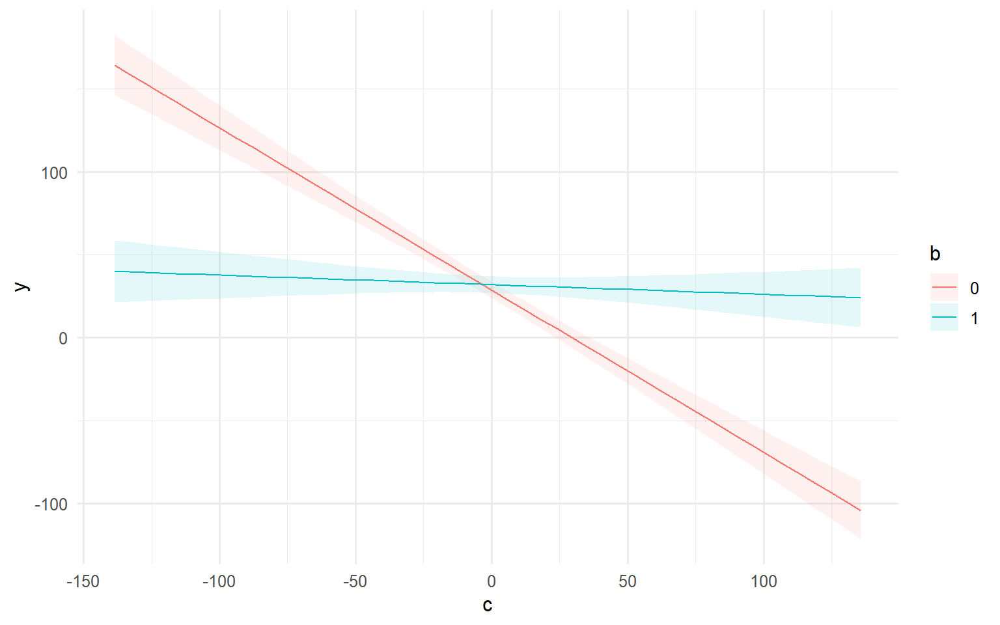
# Customize with ggplot functions
fig31a +
geom_rug(data = intsim01, mapping = aes(x = c), sides = "b", alpha = 0.3) +
geom_hline(yintercept = 0) +
scale_color_manual(values = cleanplots) +
ggtitle("[3.1.a] Predictions from linear regression model that includes b*c product term")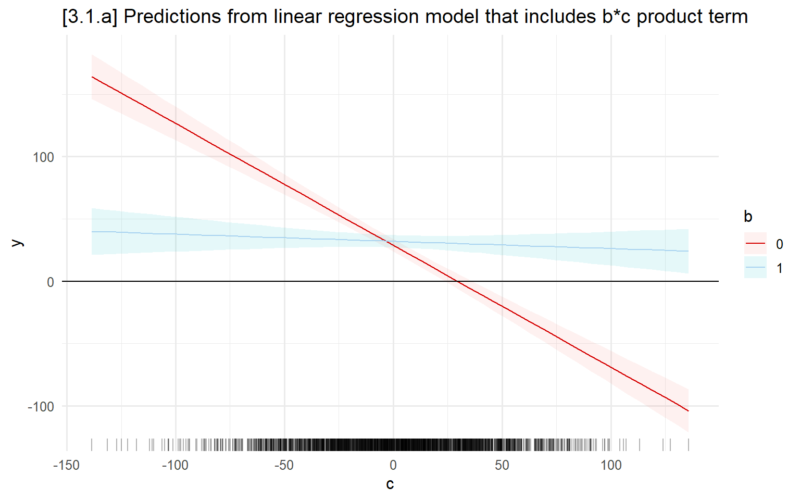
Ex 2: Binary Logit with Interaction
# Interaction model
mod2a <- glm(y ~ b + c, family = binomial, data = intsim02)
mod2b <- glm(y ~ b*c, family = binomial, data = intsim02)
mod2c <- glm(y ~ b*c + x1, family = binomial, data = intsim02)
modelsummary(list(mod2a, mod2b, mod2c), stars = TRUE)| (1) | (2) | (3) | |
|---|---|---|---|
| (Intercept) | 1.257* | 3.238+ | 3.235+ |
| (0.539) | (1.877) | (1.876) | |
| b | -4.225*** | -6.363** | -6.366** |
| (0.262) | (1.950) | (1.949) | |
| c | 0.487*** | 0.147 | 0.148 |
| (0.083) | (0.313) | (0.313) | |
| b × c | 0.366 | 0.367 | |
| (0.325) | (0.325) | ||
| x1 | -0.057 | ||
| (0.062) | |||
| Num.Obs. | 2000 | 2000 | 2000 |
| AIC | 1520.3 | 1521.0 | 1522.2 |
| BIC | 1537.1 | 1543.4 | 1550.2 |
| Log.Lik. | -757.157 | -756.521 | -756.094 |
| F | 139.389 | 96.128 | 72.239 |
| RMSE | 0.36 | 0.36 | 0.36 |
| + p < 0.1, * p < 0.05, ** p < 0.01, *** p < 0.001 |
# 3.1.b - Plot the predictions
fig31b <- plot_predictions(mod2c, condition = c("c", "b"), rug = TRUE)
fig31b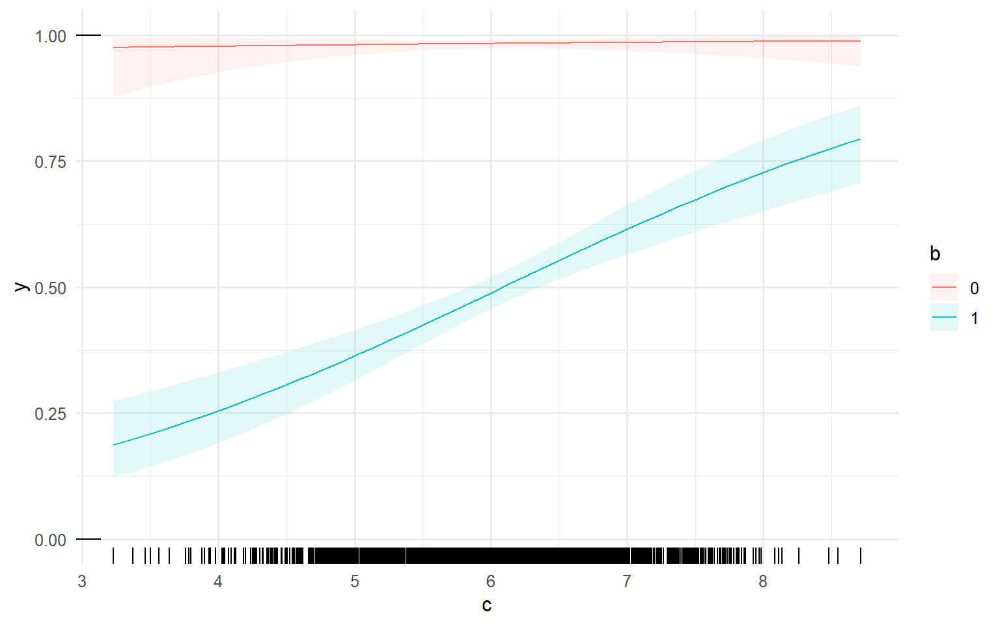
# Customize with ggplot functions
fig31b + scale_color_manual(values=cleanplots) +
ggtitle("[3.1.b] Predictions from binary logit model that includes b*c product term")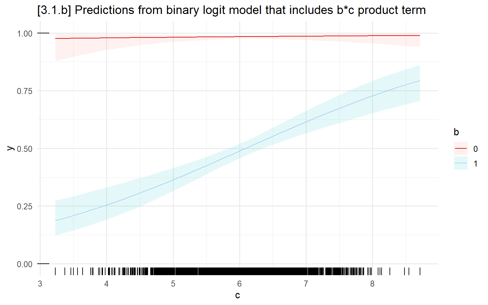
############
## Anscombe's quartet
############
summary(anscombe)## Xabc Yb Yc Xd Yd
## Min. : 4.0 Min. :3.100 Min. : 5.39 Min. : 8 Min. : 5.250
## 1st Qu.: 6.5 1st Qu.:6.695 1st Qu.: 6.25 1st Qu.: 8 1st Qu.: 6.170
## Median : 9.0 Median :8.140 Median : 7.11 Median : 8 Median : 7.040
## Mean : 9.0 Mean :7.501 Mean : 7.50 Mean : 9 Mean : 7.501
## 3rd Qu.:11.5 3rd Qu.:8.950 3rd Qu.: 7.98 3rd Qu.: 8 3rd Qu.: 8.190
## Max. :14.0 Max. :9.260 Max. :12.74 Max. :19 Max. :12.500
## Ya
## Min. : 4.260
## 1st Qu.: 6.315
## Median : 7.580
## Mean : 7.501
## 3rd Qu.: 8.570
## Max. :10.840summary(anscombe[c("Ya", "Yb", "Yc", "Yd")])## Ya Yb Yc Yd
## Min. : 4.260 Min. :3.100 Min. : 5.39 Min. : 5.250
## 1st Qu.: 6.315 1st Qu.:6.695 1st Qu.: 6.25 1st Qu.: 6.170
## Median : 7.580 Median :8.140 Median : 7.11 Median : 7.040
## Mean : 7.501 Mean :7.501 Mean : 7.50 Mean : 7.501
## 3rd Qu.: 8.570 3rd Qu.:8.950 3rd Qu.: 7.98 3rd Qu.: 8.190
## Max. :10.840 Max. :9.260 Max. :12.74 Max. :12.500amod1 <- lm(Ya ~ Xabc, data = anscombe)
amod2 <- lm(Yb ~ Xabc, data = anscombe)
amod3 <- lm(Yc ~ Xabc, data = anscombe)
amod4 <- lm(Yd ~ Xd, data = anscombe)
modelsummary(list(amod1, amod2, amod3, amod4), stars = TRUE)| (1) | (2) | (3) | (4) | |
|---|---|---|---|---|
| (Intercept) | 3.000* | 3.001* | 3.002* | 3.002* |
| (1.125) | (1.125) | (1.124) | (1.124) | |
| Xabc | 0.500** | 0.500** | 0.500** | |
| (0.118) | (0.118) | (0.118) | ||
| Xd | 0.500** | |||
| (0.118) | ||||
| Num.Obs. | 11 | 11 | 11 | 11 |
| R2 | 0.667 | 0.666 | 0.666 | 0.667 |
| R2 Adj. | 0.629 | 0.629 | 0.629 | 0.630 |
| AIC | 39.7 | 39.7 | 39.7 | 39.7 |
| BIC | 40.9 | 40.9 | 40.9 | 40.9 |
| Log.Lik. | -16.841 | -16.846 | -16.838 | -16.833 |
| F | 17.990 | 17.966 | 17.972 | 18.003 |
| RMSE | 1.12 | 1.12 | 1.12 | 1.12 |
| + p < 0.1, * p < 0.05, ** p < 0.01, *** p < 0.001 |
# 3.1.c - Scatterplot of the data
ggplot(anscombe) +
geom_point(aes(x = Xabc, y = Ya), color = "red4", size = 3) +
geom_point(aes(x = Xabc, y = Yb), color = "skyblue2", size = 3) +
geom_point(aes(x = Xabc, y = Yc), color = "gray", size = 3) +
geom_point(aes(x = Xd, y = Yd), color = "black", size = 3) +
labs(title = "[3.1.c] Anscombe's Quartet - All y & x Variables Have Same Mean and SD")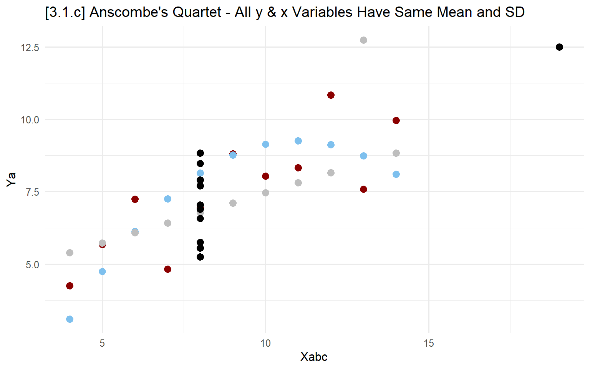
# 3.1.d - Add connected lines
ggplot(anscombe) +
geom_point(aes(x = Xabc, y = Ya), color = "red3", size = 3) +
geom_line( aes(x = Xabc, y = Ya), color = "red3") +
geom_point(aes(x = Xabc, y = Yb), color = "skyblue2", size = 3) +
geom_line( aes(x = Xabc, y = Yb), color = "skyblue2") +
geom_point(aes(x = Xabc, y = Yc), color = "gray", size = 3) +
geom_line(aes(x = Xabc, y = Yc), color = "gray") +
geom_point(aes(x = Xd, y = Yd), color = "black", size = 3) +
labs(title = "[3.1.d] Anscombe's Quartet - All y & x Variables Have Same Mean and SD")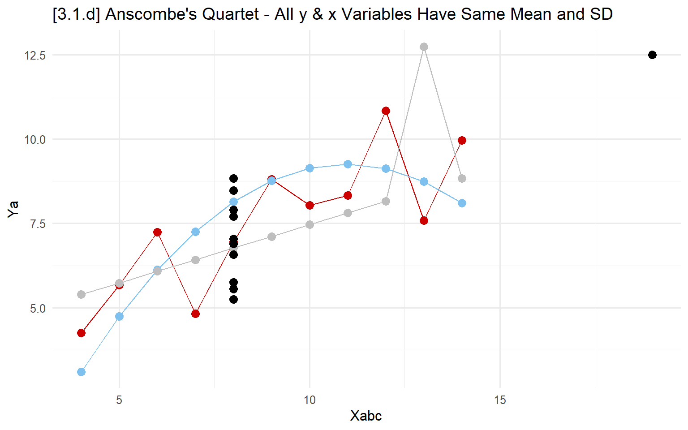
3.2 - Plots of distributions
Histogram
Histograms “bin” values within a certain range and plot the quantity within that bin as height: higher bars represent ranges that are more frequent in the data.
# 3.2.a - Frequency option to plot # of observations in each bin
ggplot(ah, aes(x=bmi)) +
geom_histogram() +
labs( x="Body mass index (BMI)", y="Frequency",
title="[3.2.a] Histogram of Distribution of Body Mass Index (BMI)",
subtitle="Y-axis Shows Numbers of Observations in Bin")## `stat_bin()` using `bins = 30`. Pick better value with `binwidth`.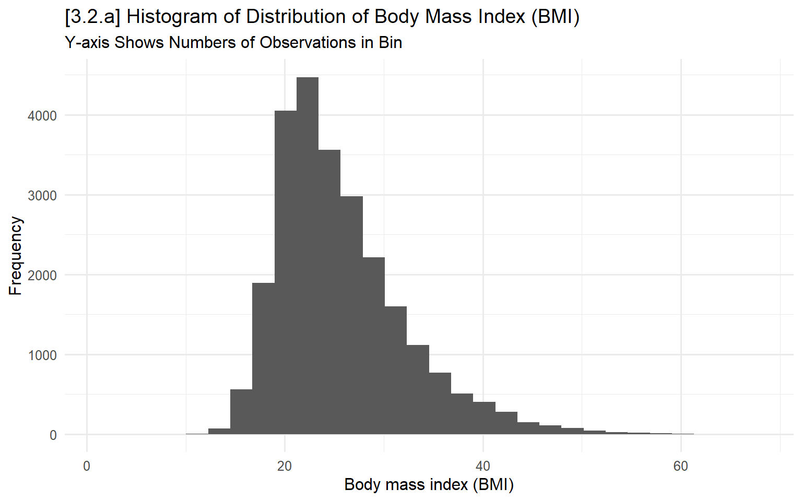
# 3.2.b - Remove fill from bins and instead outline
ggplot(ah, aes(x=bmi)) +
geom_histogram(fill = NA, color = "skyblue2") +
labs( x="Body mass index (BMI)", y="Frequency",
title="[3.2.b] Histogram of Distribution of Body Mass Index (BMI)",
subtitle="Y-axis Shows Numbers of Observations in Bin")## `stat_bin()` using `bins = 30`. Pick better value with `binwidth`.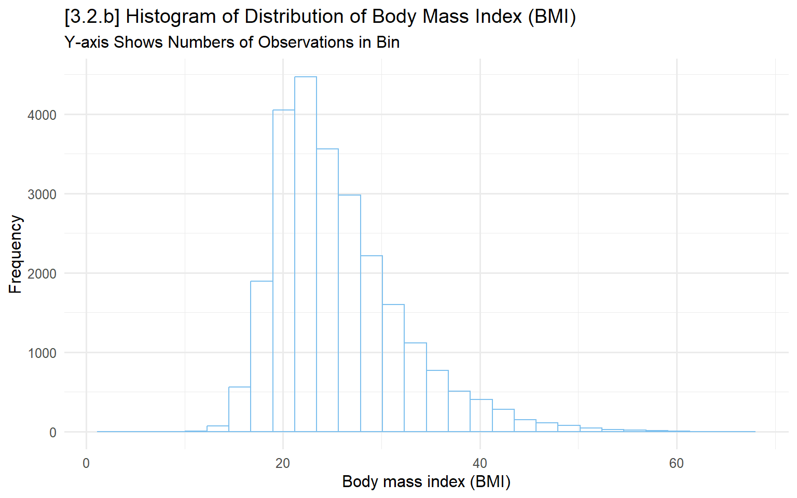
# Correlation of BMI and health
# hetcor(hrs[, c("srhealth", "bmi")])Kernel Density Plot
Kernel density plots provide smoothed lines showing the distribution of a variable.
# 3.2.c - Add density to histogram (just for showing what it is)
ggplot(ah, aes(x = bmi)) +
geom_histogram(aes(y = ..density..),
colour = 1, fill = "white") +
geom_density(color = "red") +
labs( x="Body mass index (BMI)",
title="[3.2.c] Histogram with overlaid kernel density plot")## `stat_bin()` using `bins = 30`. Pick better value with `binwidth`.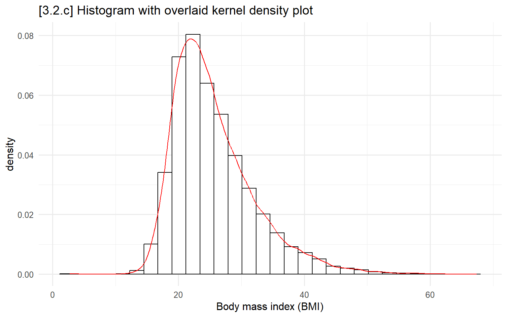
# 3.2.d - Usually, just want the density and not the histogram too
ggplot(ah, aes(x = bmi)) +
geom_density( ) +
labs( x="Body mass index (BMI)",
title="[3.2.d] Kernel density plot for body mass index (BMI)")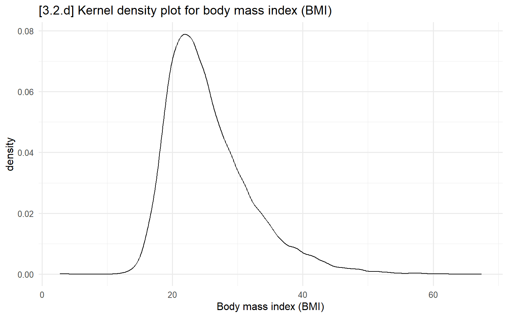
# 3.2.e - Overlay multiple densities for different groups
ggplot(filter(ah, !is.na(health)), aes(x=bmi, color=health)) +
geom_density(size = .8) +
labs(x="Body Mass Index (BMI)",
title="[3.2.e] Kernel-density plots of BMI based on self-rated health") +
scale_color_manual(values = cleanplots)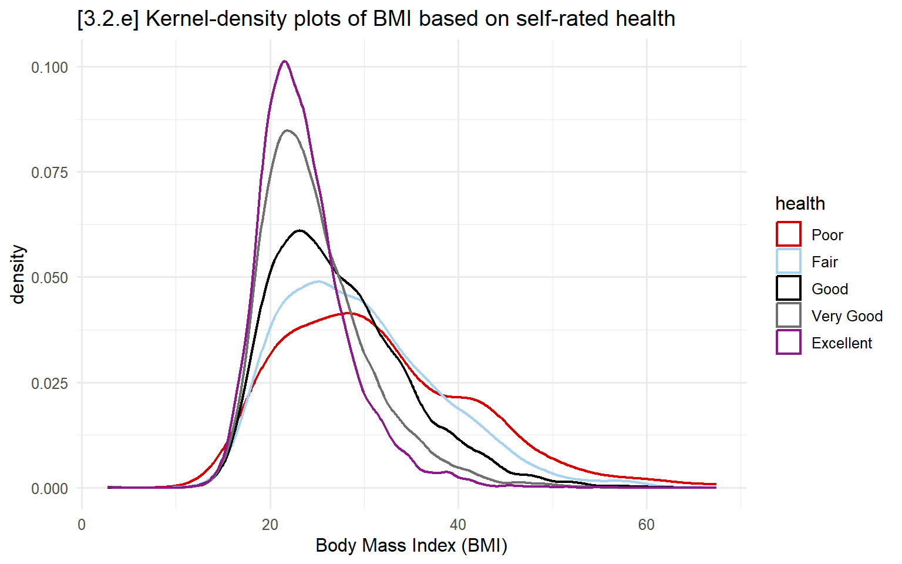
Box plots
Box plots are useful for comparing distributions across variables or across groups.
Line break in middle of box = median
Box boundaries = interquartile range (IQR)
- IQR: 75th percentile – 25th percentile
- Whiskers = range of data without outliers*
- i.e., Where the vast majority of the data falls
- Dots = outliers
NOTE: Following Tukey (1977), the length of the whiskers (and thus, the cutoff for outliers) is:
Upper cutoff: 75th percentile + 1.5 * IQR
Lower cutoff: 25th percentile - 1.5 * IQR
# 3.2.f - BMI, with separate boxes by wave
ggplot(ah, aes(x=wave, y=bmi)) +
geom_boxplot() +
labs(x="",
y="Body Mass Index (BMI)",
title="[3.2.f] Box plot of body mass index (BMI) by wave of Add Health")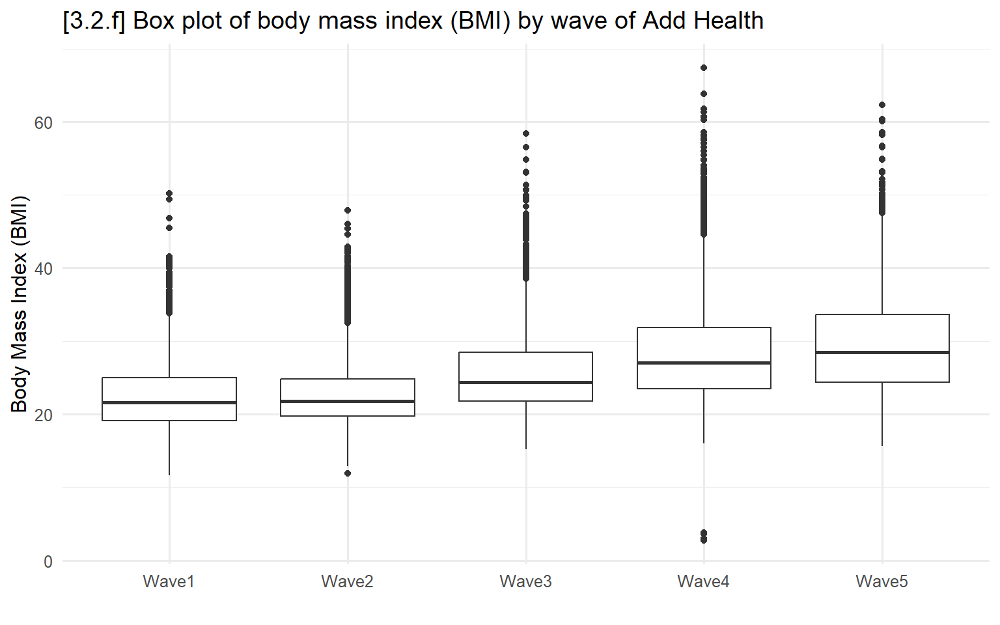
# 3.2.g - Add a second grouping variable
ggplot(ah, aes(x=wave, y=bmi, fill=ordered(male, c("Female", "Male")))) +
geom_boxplot( ) +
coord_flip( ) +
labs(x="",
y="Body Mass Index (BMI)",
title="[3.2.g] Box plot of body mass index (BMI) by Add Health wave and gender") +
scale_fill_manual(values = cleanplots, name = "", labels=c("Female", "Male"))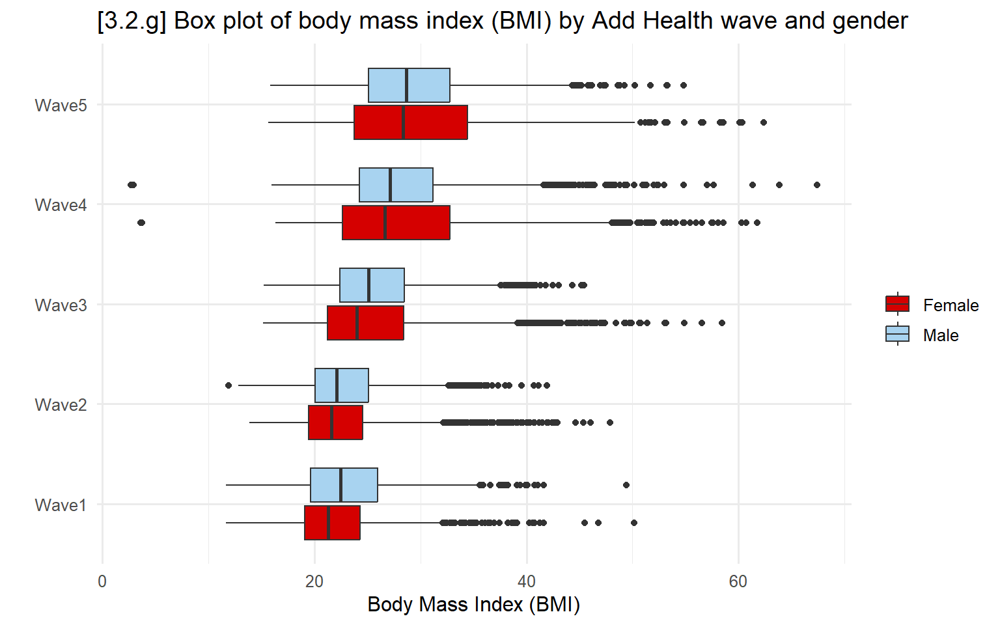
3.3 - Pie charts, bar charts, and dot plots
Pie charts
Pie charts present the proportion of a variable represented in each category.
# 3.3.a - Pie charts (generally not recommended)
ggplot(filter(hrs, !is.na(srhealth)), aes(x = "", y = srhealth, fill = srhealth)) +
geom_col() +
coord_polar(theta = "y") +
labs(title = "[3.3.a] Pie chart for distribution of self-rated health among older adults (HRS)") +
scale_fill_viridis_d() +
theme_void(base_size = 14)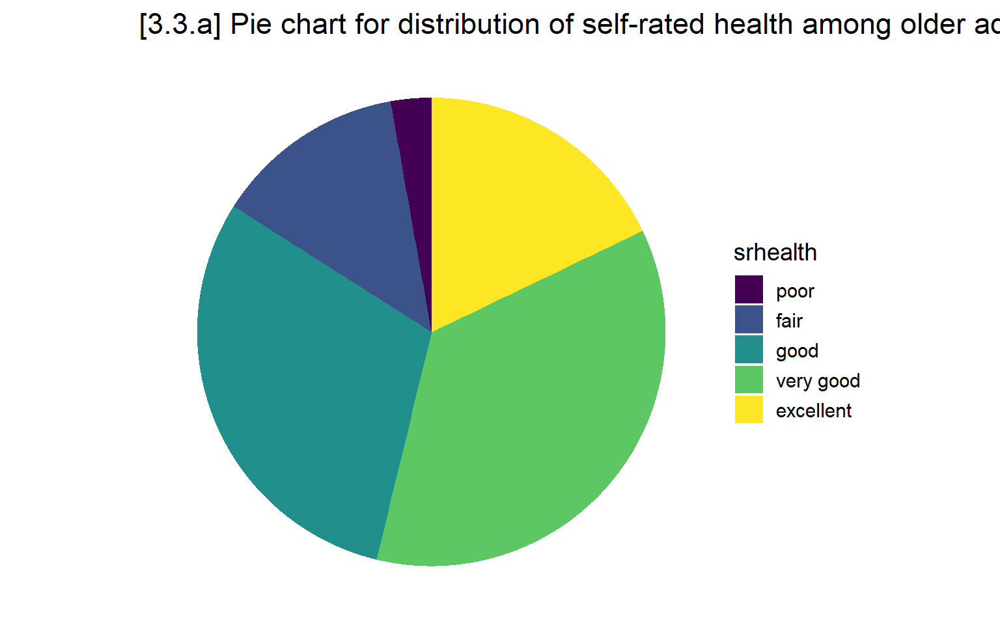
Stacked bar chart
Stacked bar charts are a useful alternative to pie charts.
# 3.3.b - Stacked bar chart with subsample who were in HRS since beginning
ggplot(hrs_filtered, aes(fill=srhealth, x=year)) +
geom_bar(position = "fill") +
labs(title = "[3.3.b] Stacked bar chart of self-rated health among older adults over time (HRS)",
y = "Pr(Self-rated health)") +
scale_fill_viridis_d()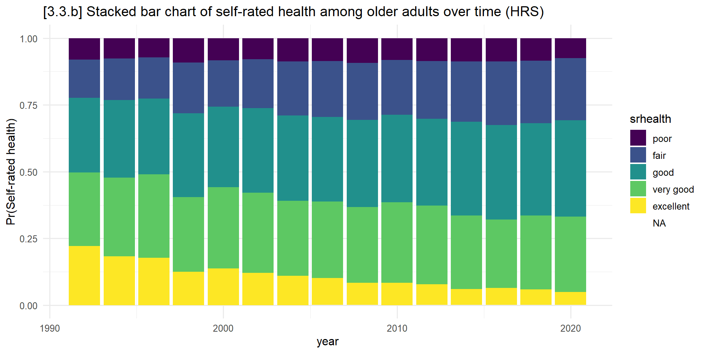
Bar charts
Bar charts—where the width stays the same and only the length varies based on a quantitative metric—are among the most effective tools for comparing quantities.
# 3.3.c - Bar chart for distribution of binge drinking
ggplot(hrs, aes(x=dayweekdrink)) +
geom_bar() +
labs(title = "[3.3.c] Bar chart for days usually drink each week (older adults, HRS)",
x = "Days usally drink each week") 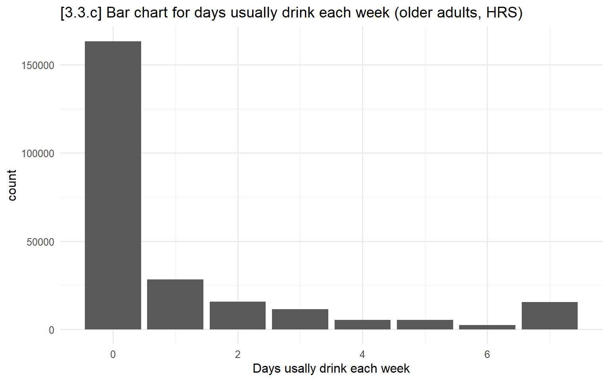
# 3.3.d - Bar chart for mean depressive symptoms by days drinking
ggplot(hrs, aes(x = dayweekdrink, y = cesd)) +
stat_summary(fun = mean, geom = "bar", fill = "skyblue2") +
labs(x = "Days drinking alcohol per week",
y = "Depressive symptoms (scale average)",
title = "[3.3.d] Average number of depressive symptoms, by number of days drinking per week") +
scale_y_continuous(breaks = seq(0, 2, 0.5)) + coord_cartesian(ylim = c(0, 2))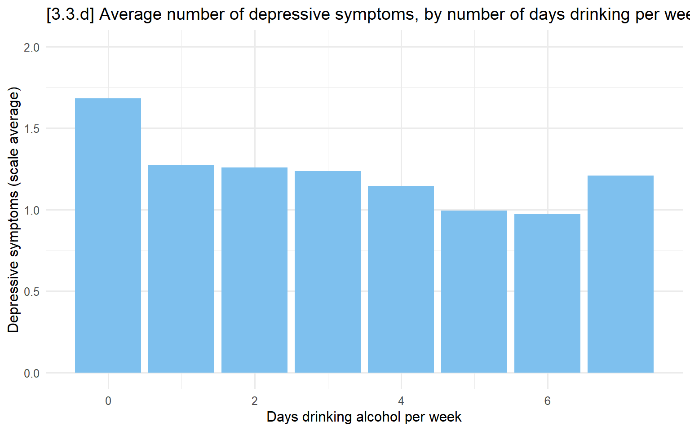
# 3.3.e - Add 95% confidence intervals to last plot
ggplot(hrs, aes(x = dayweekdrink, y = cesd)) +
stat_summary(fun = mean, geom = "bar", fill = "skyblue2", width = .7) +
stat_summary(fun.data = mean_cl_normal, geom = "errorbar", width = .3) +
labs(x = "Days drinking alcohol per week",
y = "Depressive symptoms (scale average)",
title = "[3.3.e] Average number of depressive symptoms, by number of days drinking per week",
subtitle = "With 95% confidence intervals") +
scale_y_continuous(breaks = seq(0, 2, 0.5)) + coord_cartesian(ylim = c(0, 2))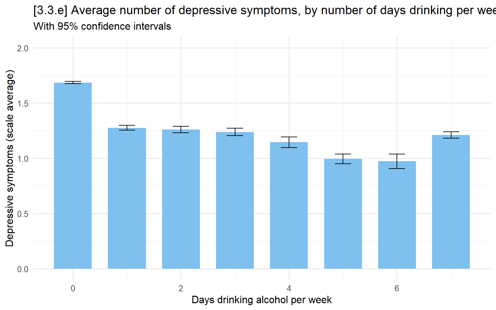
## 3.3.f - Bar chart to show which variables have what % missing data ##
# Calculate missingness percentages
missing_summary <- hrs %>%
summarise(across(everything(), ~sum(is.na(.))/n()*100)) %>%
pivot_longer(everything(), names_to = "variable", values_to = "pct_missing")
# Bar chart
ggplot(missing_summary, aes(x = reorder(variable, pct_missing), y = pct_missing)) +
geom_col(fill = "steelblue") +
coord_flip() +
labs(title = "[3.3.f] Percentage of Missing Data by Variable in HRS",
x = "Variable",
y = "Percent Missing") 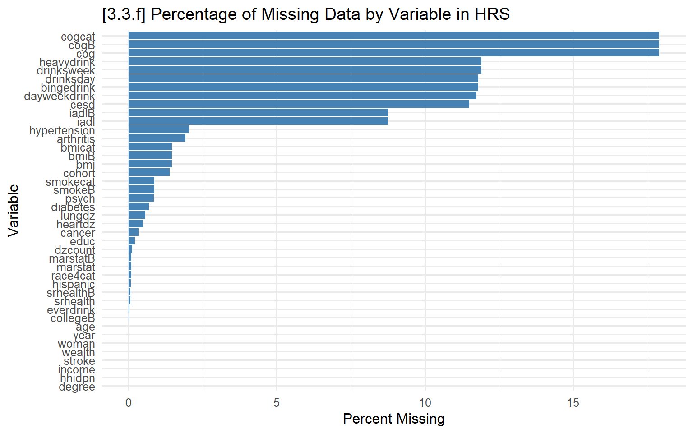
Dot plots
Instead of a colored in bar (as in a bar chart), you simply place a dot at the value being plotted (would be the top of the bar).
# 3.3.g - Recreate plot above but with a dot plot
ggplot(hrs, aes(x = dayweekdrink, y = cesd)) +
stat_summary(fun = mean, geom = "point", size = 3) +
stat_summary(fun.data = mean_cl_normal, geom = "errorbar", width = .3) +
labs(x = "Days drinking alcohol per week",
y = "Depressive symptoms (scale average)",
title = "[3.3.g] Average number of depressive symptoms, by number of days drinking per week",
subtitle = "With 95% confidence intervals") +
scale_y_continuous(breaks = seq(0, 2, 0.5)) + coord_cartesian(ylim = c(0, 2))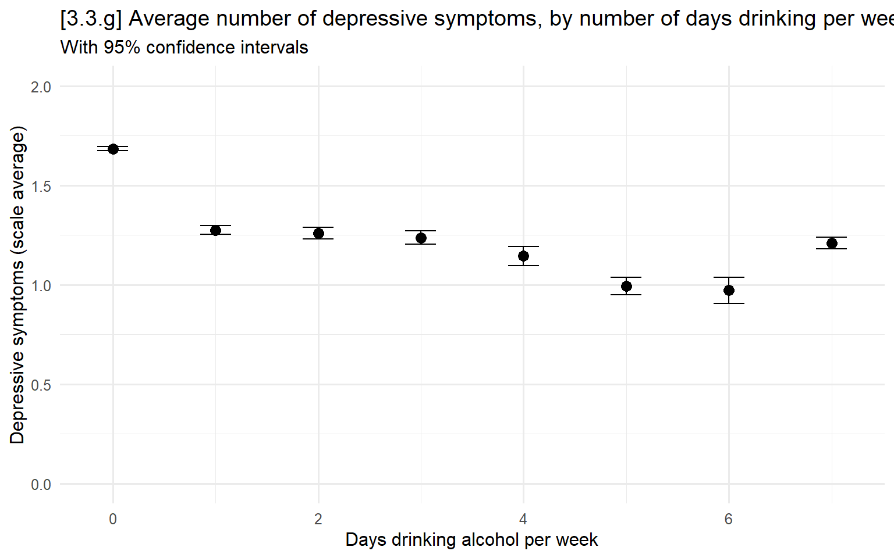
# 3.3.h - Separate out means by gender
ggplot(hrs, aes(x = dayweekdrink, y = cesd, color = woman, group = woman)) +
stat_summary(fun = mean, geom = "point", size = 3) +
stat_summary(fun.data = mean_cl_normal, geom = "errorbar", width = .25) +
labs(x = "Days drinking alcohol per week",
y = "Depressive symptoms (scale average)",
title = "[3.3.h] Average number of depressive symptoms, by number of days drinking per week",
subtitle = "Separately by gender") +
scale_y_continuous(breaks = seq(0, 2, 0.5)) + coord_cartesian(ylim = c(0, 2)) +
scale_color_manual(values = cleanplots)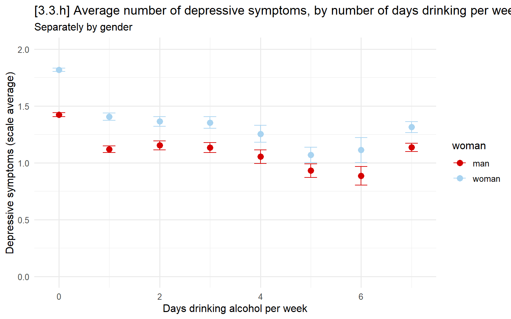
3.4 - Plots of bivariate relationships
Scatterplots
Present one variable on the x-axis and one on the y-axis and plot every single observation
The dependent variable (DV) or outcome is the y-variable
The independent variable (IV) or predictor/cause is the x-variable
# 3.4.a - Basic scatterplot doesn't work because of overlapping data points
ggplot(hrs, aes(x = age, y = dzcount)) +
geom_point( ) +
labs(x = "Age",
y = "Number of chronic diseases",
title = "[3.4.a] Relationship between number of chronic diseases and age") +
scale_x_continuous(breaks = seq(20, 100, 10))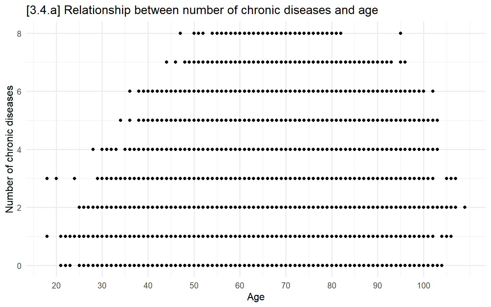
# 3.4.b - Jitter (random noise) points to prevent overlap
ggplot(hrs, aes(x = age, y = dzcount)) +
geom_jitter(height = .25, width = .25) +
labs(x = "Age",
y = "Number of chronic diseases",
title = "[3.4.b] Relationship between number of chronic diseases and age",
subtitle = "Data points have been jittered to prevent overlap") +
scale_x_continuous(breaks = seq(20, 100, 10))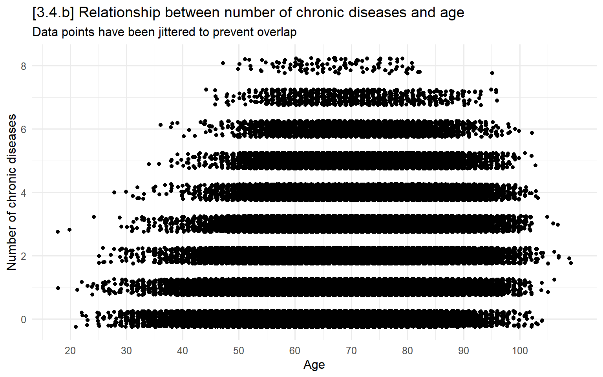
Smoothed trend lines
You can add various smoothed trend lines:
lm for a linear fit line
lm with a custom formula( ) for a regression fit that is nonlinear
E.g., formula=y~poly(x,2) for a quadratic fit
lowess for a locally weighted scatterplot smoothing (conditional mean) line
Use the span( ) option to customize just how “local” you want to fit to be
# 3.4.c - Linear regression line overlaid on scatterplot
ggplot(hrs, aes(x = age, y = dzcount)) +
geom_jitter(height = .25, width = .25) +
geom_smooth(method="lm", color = "red") +
labs(x = "Age",
y = "Number of chronic diseases",
title = "[3.4.c] Relationship between number of chronic diseases and age",
subtitle = "With linear trend line") +
scale_x_continuous(breaks = seq(20, 100, 10))## `geom_smooth()` using formula = 'y ~ x'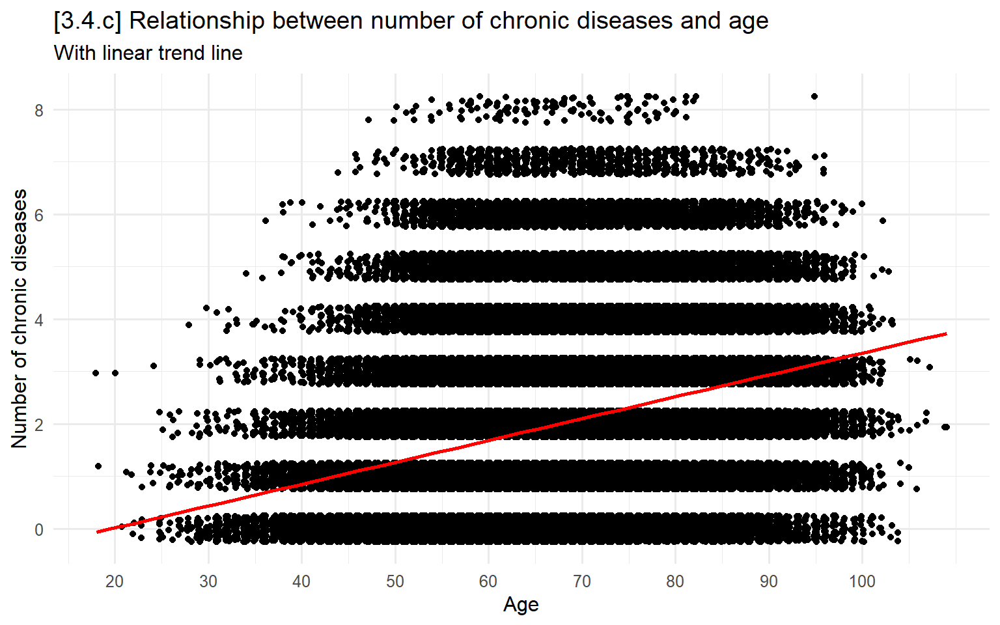
# 3.4.d - Quadratic regression line (x and x^2) overlaid on scatterplot
ggplot(hrs, aes(x = age, y = dzcount)) +
geom_jitter(height = .25, width = .25) +
geom_smooth(method="lm", formula=y~poly(x,2), color = "red") +
labs(x = "Age",
y = "Number of chronic diseases",
title = "[3.4.d] Relationship between number of chronic diseases and age",
subtitle = "With quadratic trend line") +
scale_x_continuous(breaks = seq(20, 100, 10))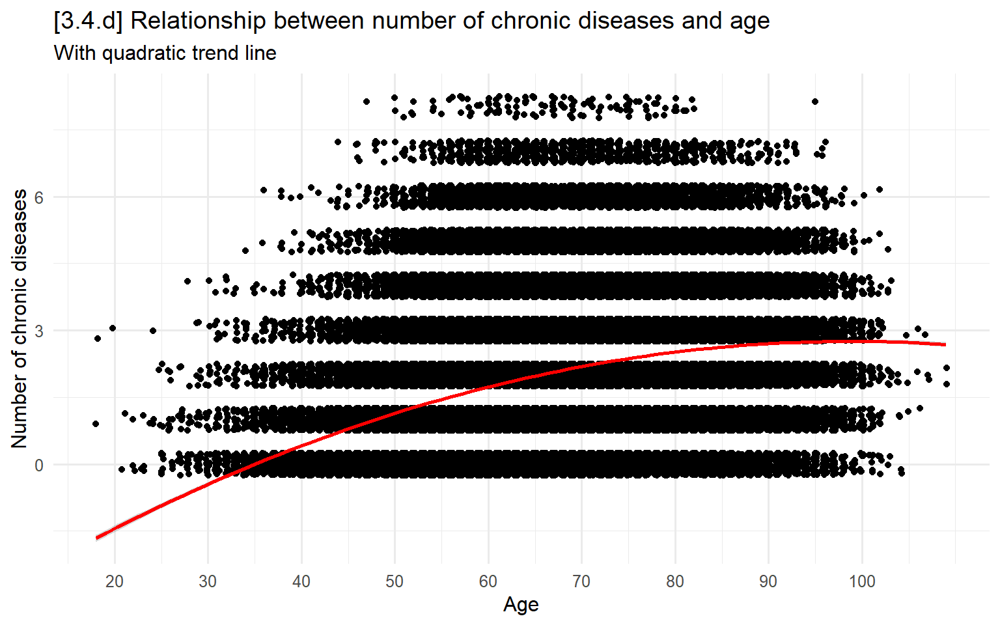
# 3.4.e - Poisson regression line overlaid on scatterplot
ggplot(hrs, aes(x = age, y = dzcount)) +
geom_jitter(height = .25, width = .25) +
geom_smooth(method = "glm", formula = y~poly(x,2),
method.args = list(family = poisson(link = "log")), color = "red") +
labs(x = "Age",
y = "Number of chronic diseases",
title = "[3.4.e] Relationship between number of chronic diseases and age",
subtitle = "With trend line from a Poisson model") +
scale_x_continuous(breaks = seq(20, 100, 10))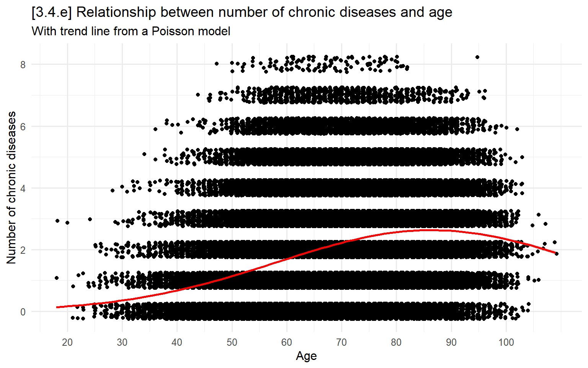
# 3.4.f - Lowess smoothed fit line (running means)
ggplot(hrs %>% filter(year == 2020), aes(x = age, y = dzcount)) +
geom_jitter(height = .25, width = .25) +
geom_smooth(method="loess", se = F, span = .4, color = "red") +
labs(x = "Age",
y = "Number of chronic diseases",
title = "[3.4.f] Relationship between number of chronic diseases and age",
subtitle = "With lowess trend line (span = 0.4) -- running means") +
scale_x_continuous(breaks = seq(20, 100, 10))## `geom_smooth()` using formula = 'y ~ x'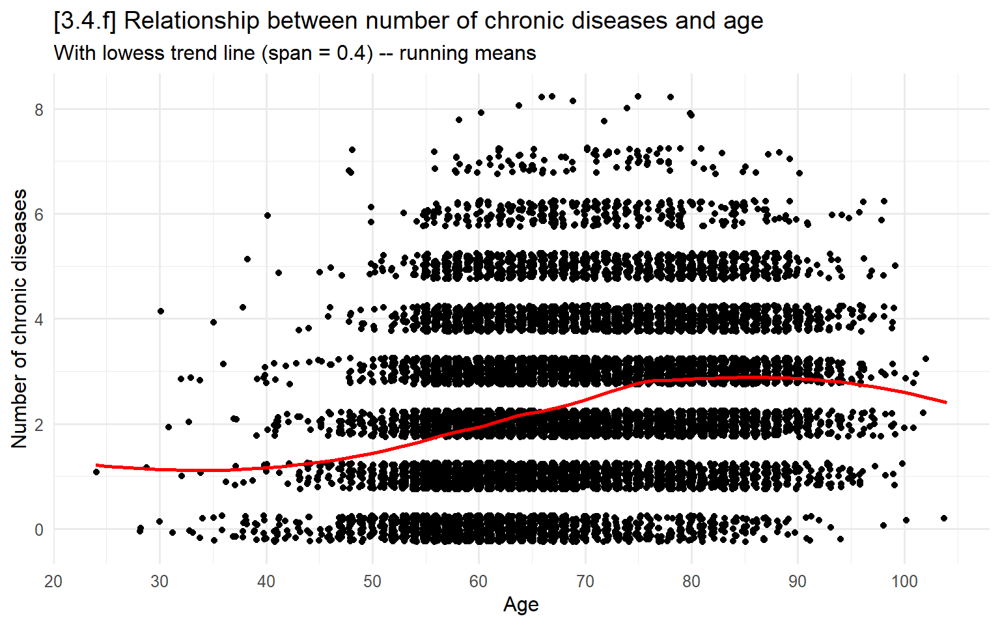
# 3.4.g - Alternative loess approach using ~median smoothing (downweights outliers)
## using the "symmetric" option
ggplot(hrs %>% filter(year == 2020), aes(x = age, y = dzcount)) +
geom_jitter(height = .25, width = .25) +
geom_smooth(method = "loess", method.args = list(family = "symmetric"),
se = FALSE, span = .4, color = "red") +
labs(x = "Age",
y = "Number of chronic diseases",
title = "[3.4.g] Relationship between number of chronic diseases and age",
subtitle = "With symmetric lowess trend line (span = 0.4) -- running medians") +
scale_x_continuous(breaks = seq(20, 100, 10))## `geom_smooth()` using formula = 'y ~ x'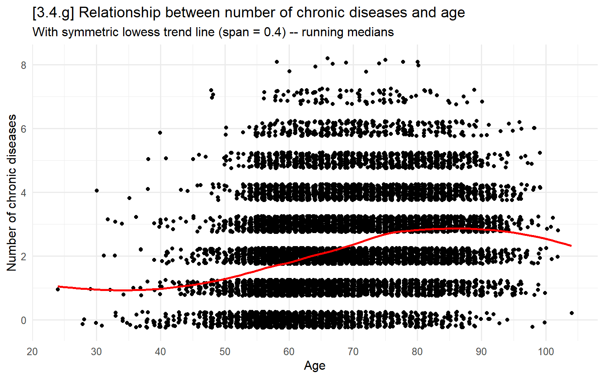
Bar charts and dot plots of conditional means
Above, we covered how to use bar graphs and dot plots to examine univariate distributions
These are both also extremely popular for showing bivariate relationships
This is most effective when you have a continuous or binary DV and categorical IV(s)
The use of SE/CIs is very important here
# 3.4.i - Bar chart
ggplot(filter(hrs_filtered, !is.na(cog)),
aes(x = factor(year), y = cog)) +
stat_summary(fun = mean, geom = "bar", fill = "skyblue2", width = 0.6) +
stat_summary(fun.data = mean_cl_normal, geom = "errorbar", width = 0.2) +
labs(x = "Year",
y = "Cognitive test score",
title = "[3.4.i] Performance on a cognitive test over time") +
scale_y_continuous(breaks = seq(0, 20, 5), limits = c(0, 20))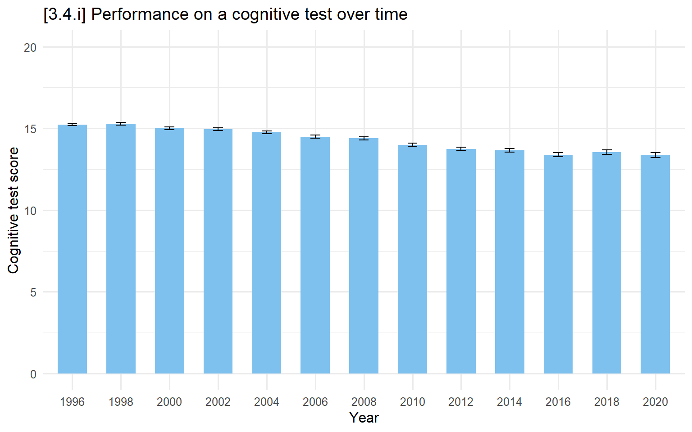
# 3.4.j - Break out by marital status too
ggplot(filter(hrs_filtered, !is.na(cog), !is.na(marstatB)),
aes(x = factor(year), y = cog, fill = marstatB)) +
stat_summary(fun = mean, geom = "bar", position = "dodge", width = 0.6) +
stat_summary(fun.data = mean_cl_normal, geom = "errorbar",
position = position_dodge(width = 0.6), width = 0.2) +
labs(x = "Year",
y = "Cognitive test score",
fill = "Marital status",
title = "[3.4.j] Performance on a cognitive test over time, by marital status") +
scale_y_continuous(breaks = seq(0, 20, 5), limits = c(0, 20)) +
scale_fill_manual(values = cleanplots)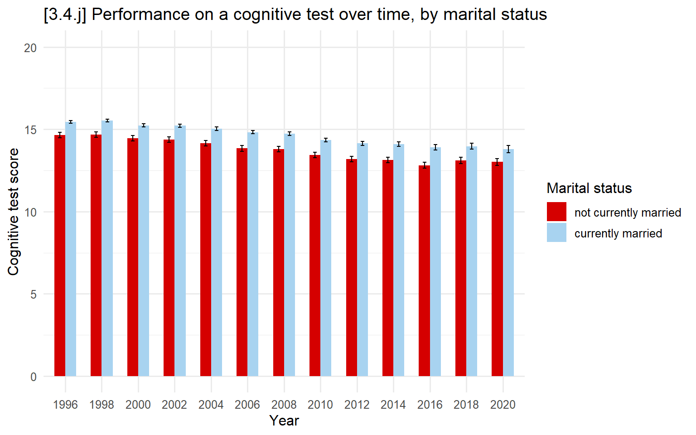
# 3.4.k - Dot plot version (Note: Allowing the default y-axis range)
dodge <- position_dodge(width = 0.6) # align points and error bars
ggplot(filter(hrs_filtered, !is.na(cog), !is.na(marstatB)),
aes(x = factor(year), y = cog, color = marstatB, group = marstatB)) +
stat_summary(fun = mean, geom = "point", size = 2, position = dodge) +
stat_summary(fun.data = mean_cl_normal, geom = "errorbar",
width = 0.2, position = dodge) +
labs(x = "Year",
y = "Cognitive test score",
color = "Marital status",
title = "[3.4.k] Performance on a cognitive test over time, by marital status") +
scale_color_manual(values = cleanplots)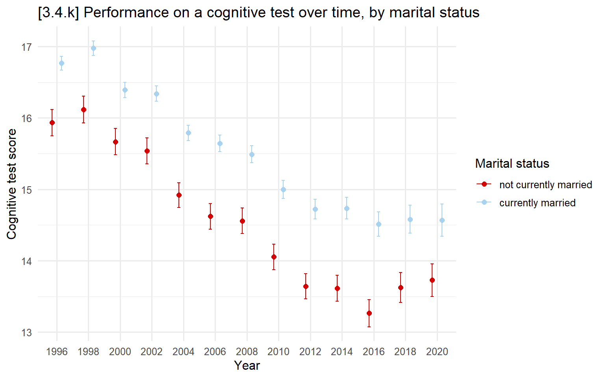
# 3.4.l - Break out by education instead (default y-axis range)
# Note: Need to specify shapes of markers manually when 7+ markers with
# scale_shape_manual. https://ggplot2.tidyverse.org/reference/scale_shape.html
ggplot(filter(hrs_filtered, !is.na(cog), !is.na(degree)),
aes(x = factor(year), y = cog, color = degree, shape = degree, group = degree)) +
stat_summary(fun = mean, geom = "point", size = 2, position = dodge) +
stat_summary(fun.data = mean_cl_normal, geom = "errorbar",
width = 0.2, position = dodge) +
labs(x = "Year",
y = "Cognitive test score",
color = "Education level", shape = "Education level",
title = "[3.4.l] Performance on a cognitive test over time, by educational attainment") +
scale_color_manual(values = cleanplots) +
scale_shape_manual(values = c(16, 16, 18, 18, 15, 15, 17, 17))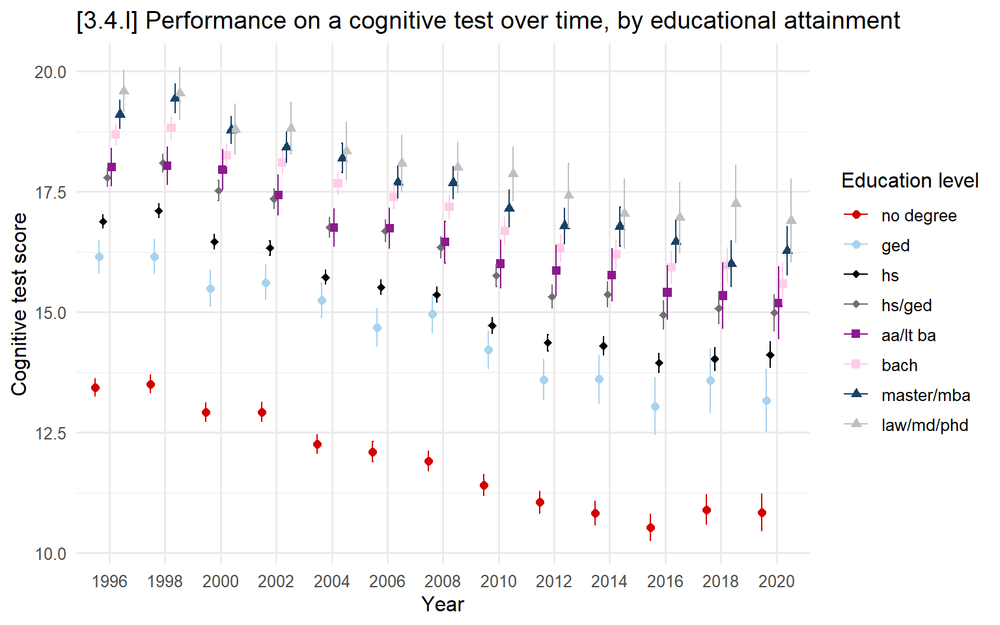
3.5 - General advice for effective graphs
Y-axis ranges
3.5.1.a - 3.5.1.d - Examples of y-axis ranges
# entire range of y
ggplot(filter(ah, wave == "Wave4", !is.na(educ)), aes(x = educ, y = income)) +
stat_summary(fun = mean, geom = "point", size = 3) +
stat_summary(fun.data = mean_cl_normal, geom = "errorbar", width = .3) +
labs(x = "Educational attainment",
y = "Income",
title = "[3.5.1.a] Average income by educational attainment (young adults [AH4])",
subtitle = "y-axis covers the observed range in data") +
scale_y_continuous(breaks = seq(0, 1000000, 100000), limits = c(0, 1000000), labels = scales::comma) 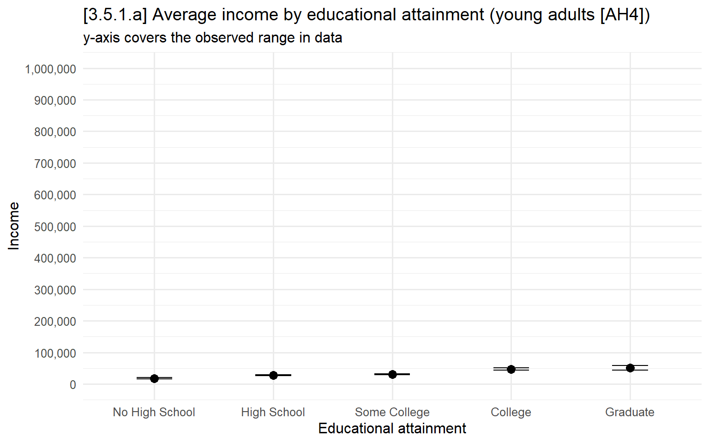
# 5th to 95th percentile of y
ggplot(filter(ah, wave == "Wave4", !is.na(educ)), aes(x = educ, y = income)) +
stat_summary(fun = mean, geom = "point", size = 3) +
stat_summary(fun.data = mean_cl_normal, geom = "errorbar", width = .3) +
labs(x = "Educational attainment",
y = "Income",
title = "[3.5.1.b] Average income by educational attainment (young adults [AH4])",
subtitle = "y-axis covers the 5th to 95th percentile of data") +
scale_y_continuous(breaks = seq(0, 80000, 10000), limits = c(0, 80000), labels = scales::comma) 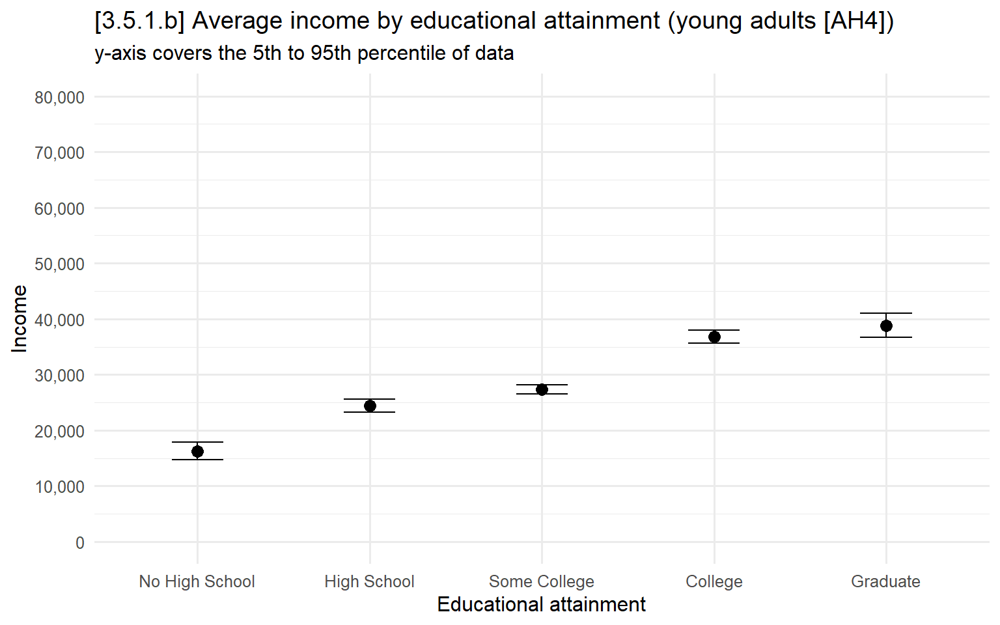
# 10th to 90th percentile of y
ggplot(filter(ah, wave == "Wave4", !is.na(educ)), aes(x = educ, y = income)) +
stat_summary(fun = mean, geom = "point", size = 3) +
stat_summary(fun.data = mean_cl_normal, geom = "errorbar", width = .3) +
labs(x = "Educational attainment",
y = "Income",
title = "[3.5.1.c] Average income by educational attainment (young adults [AH4])",
subtitle = "y-axis covers the 10th to 90th percentile of data") +
scale_y_continuous(breaks = seq(2000, 65000, 5000), limits = c(2000, 65000), labels = scales::comma) 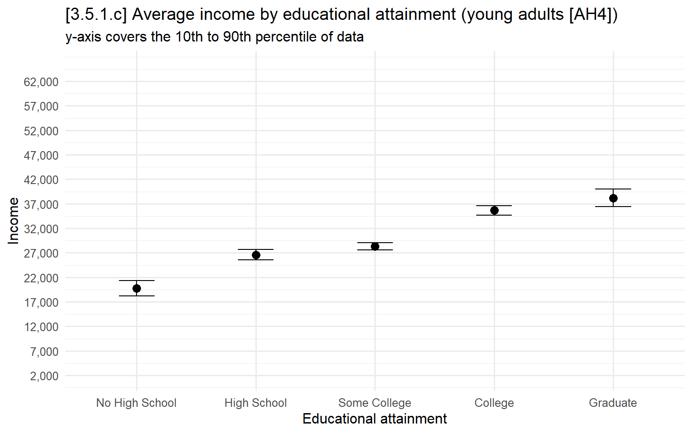
# 3.5.a & 3.5.b - Calculate experimental condition means
means_by_condition <- cgr %>%
group_by(cond) %>%
summarise(mean_warmth = mean(warmSS, na.rm = TRUE),
mean_competence = mean(compSS, na.rm = TRUE))
# 3.5.a - Too many colors to understand (not recommended)
ggplot(means_by_condition, aes(x = mean_competence, y = mean_warmth, color = cond)) +
geom_point(size = 3) +
labs(x = "Competence rating",
y = "Warmth rating",
color = "Group being rated",
title = "[3.5.a] Warmth and competence stereotypes for different social groups",
subtitle = "NOT RECOMMENDED: Too many colors to effectively match legend and graph")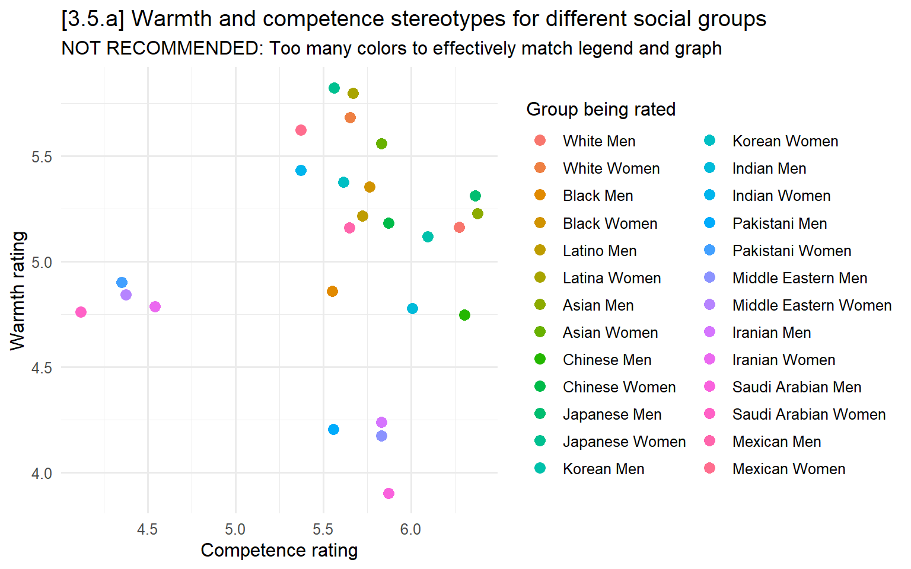
# 3.5.b - With so many groups, better to just directly label points
ggplot(means_by_condition, aes(x = mean_competence, y = mean_warmth, label = cond)) +
geom_point(size = 3, color = "skyblue2") +
geom_text(vjust = -0.7, size = 3.5) +
labs(x = "Competence rating",
y = "Warmth rating",
title = "[3.5.b] Warmth and competence stereotypes for different social groups") +
scale_x_continuous(breaks = seq(4, 6.5, .5), limits = c(4, 6.5)) +
scale_y_continuous(breaks = seq(3.5, 6, .5), limits = c(3.5, 6))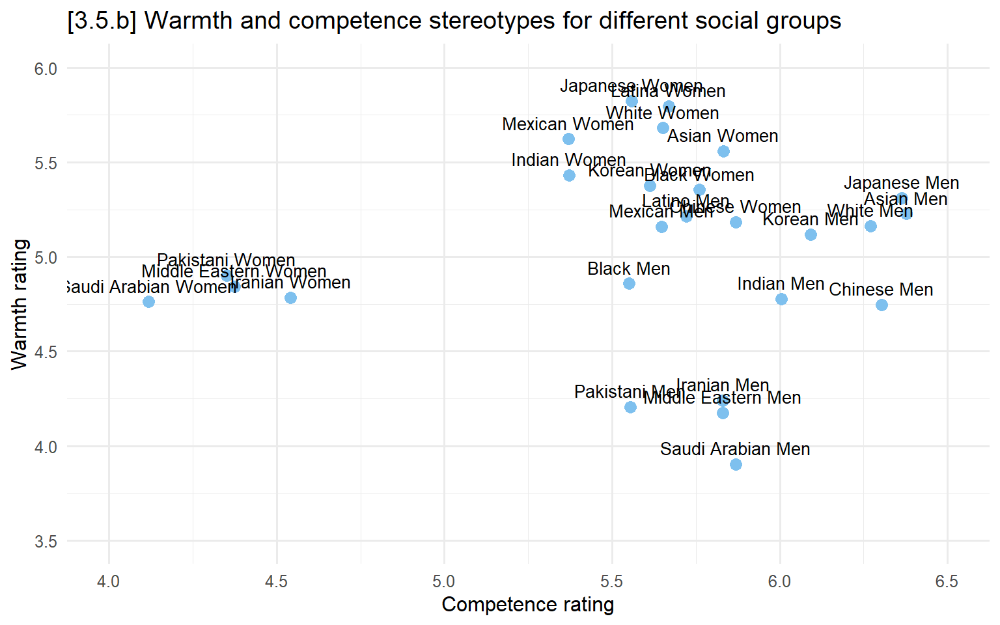
Fonts
To understand the default fonts available, use windowsFonts() (on a Windows machine). See commented out code below for details.
Can also install the extrafont package on Mac or Windows to add more fonts: https://cran.r-project.org/web/packages/extrafont/readme/README.html
3.5.c - 3.5.f font examples
# windowsFonts()
# Following three lines will load additional fonts on your computer (takes a minute)
# font_import()
# loadfonts(device = "win")
# windowsFonts()
fig31a + theme(text = element_text(family = "Arial")) +
ggtitle("Predictions from linear regression model \nthat includes b*c product term") +
labs(subtitle = "[3.5.c] Font is Arial") 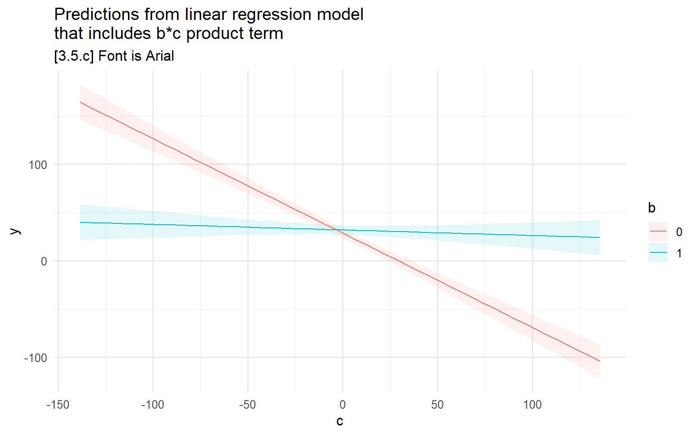
fig31a + theme(text = element_text(family = "Times New Roman")) +
ggtitle("Predictions from linear regression model \nthat includes b*c product term") +
labs(subtitle = "[3.5.d] Font is Times New Roman") 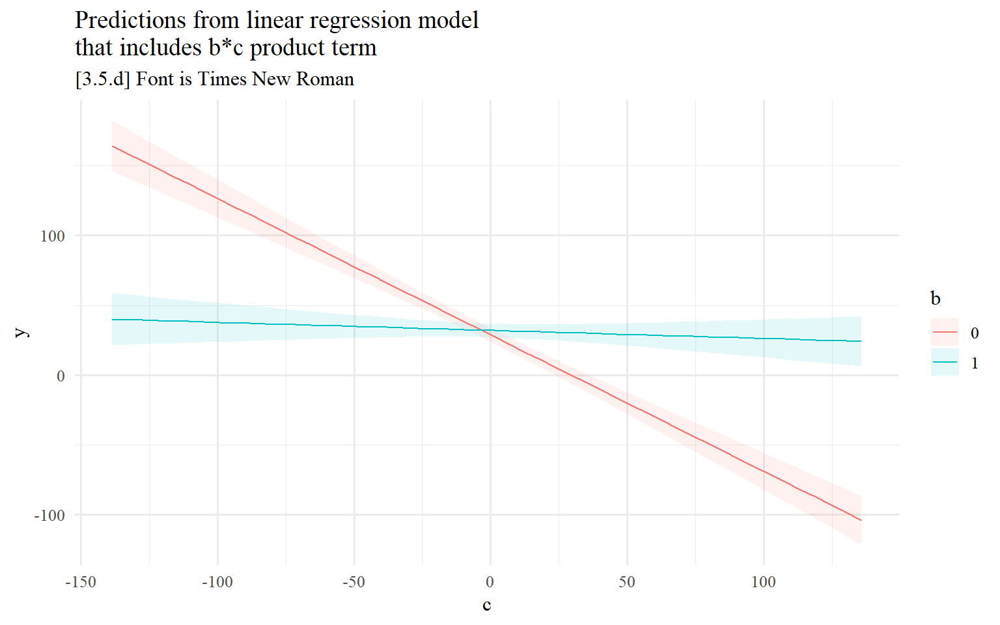
fig31a + theme(text = element_text(family = "Trebuchet MS")) +
ggtitle("Predictions from linear regression model \nthat includes b*c product term") +
labs(subtitle = "[3.5.e] Font is Trebuchet MS") 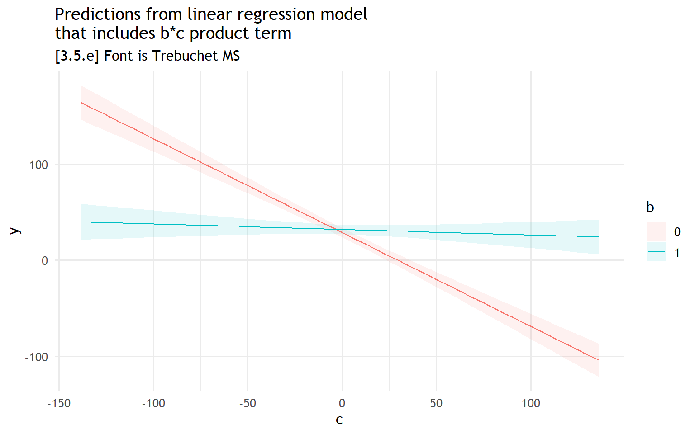
fig31a + theme(text = element_text(family = "Cambria")) +
ggtitle("Predictions from linear regression model \nthat includes b*c product term") +
labs(subtitle = "[3.5.f] Font is Cambria")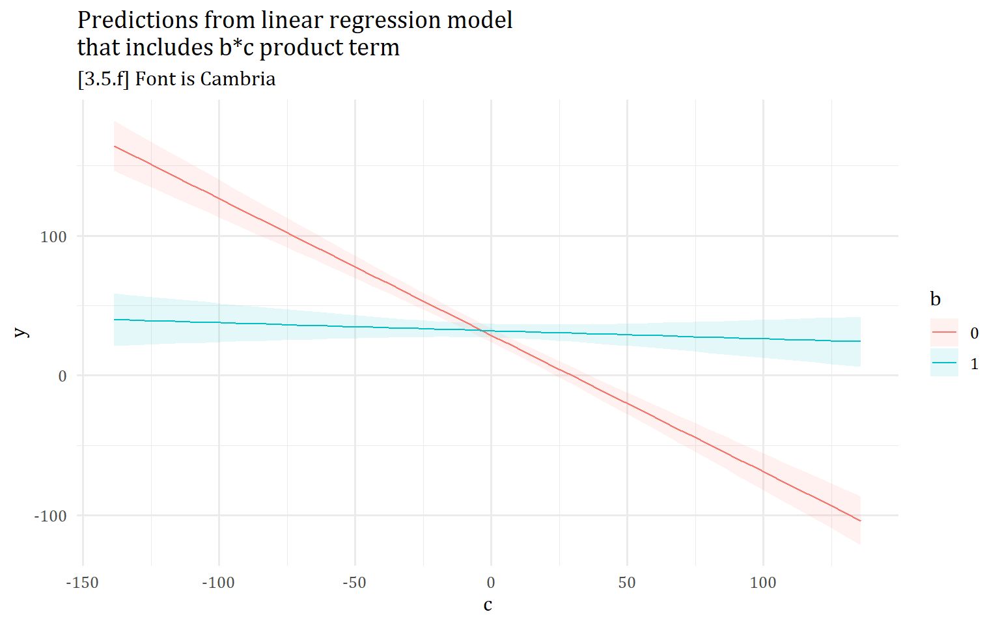
Graphics Themes
3.5.g - 3.5.j graphics themes examples
fig31a + theme_gray(base_size = 14, base_family = "Arial") +
ggtitle("Predictions from linear regression model \nthat includes b*c product term") +
labs(subtitle = "[3.5.g] Graphics theme is theme_gray (ggplot default)")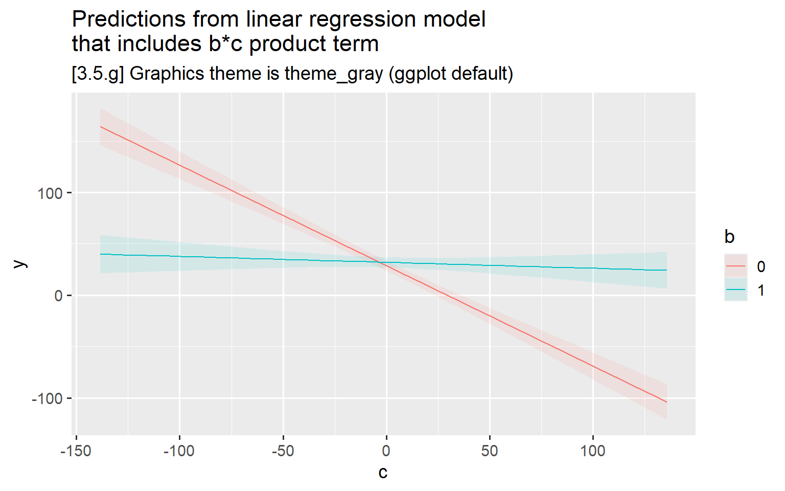
fig31a + theme_light(base_size = 14, base_family = "Arial") +
ggtitle("Predictions from linear regression model \nthat includes b*c product term") +
labs(subtitle = "[3.5.h] Graphics theme is theme_light")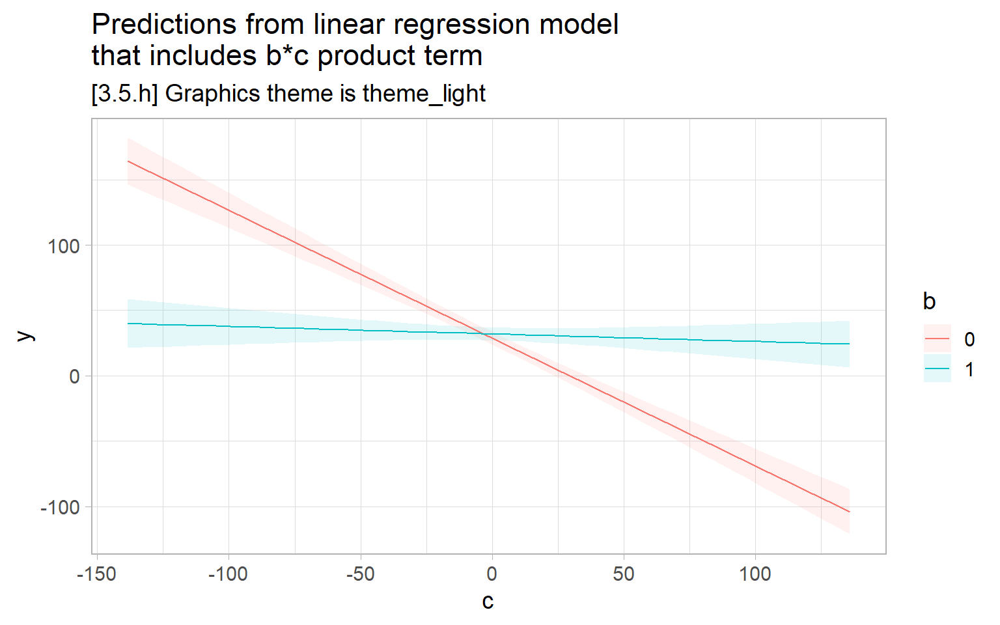
fig31a + theme_classic(base_size = 14, base_family = "Arial") +
ggtitle("Predictions from linear regression model \nthat includes b*c product term") +
labs(subtitle = "[3.5.i] Graphics theme is theme_classic")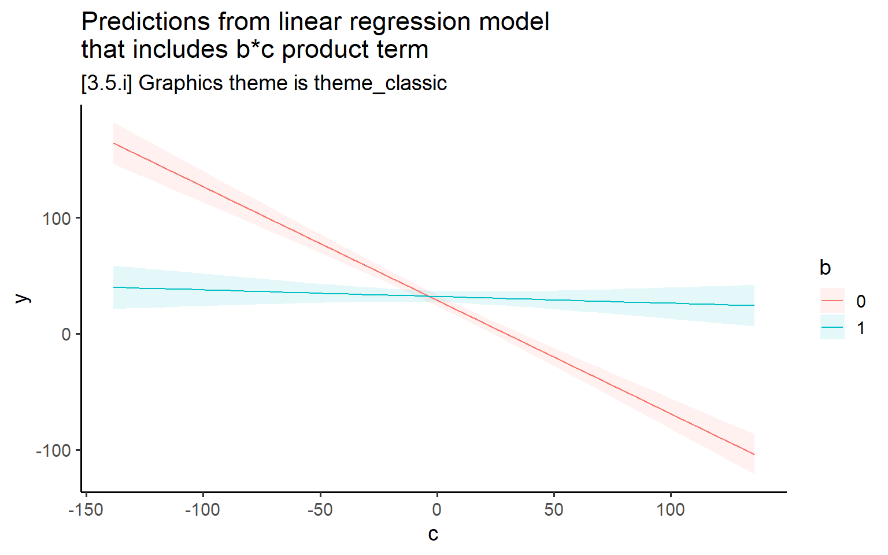
fig31a + theme_minimal(base_size = 14, base_family = "Arial") +
ggtitle("Predictions from linear regression model \nthat includes b*c product term") +
labs(subtitle = "[3.5.j] Graphics theme is theme_minimal")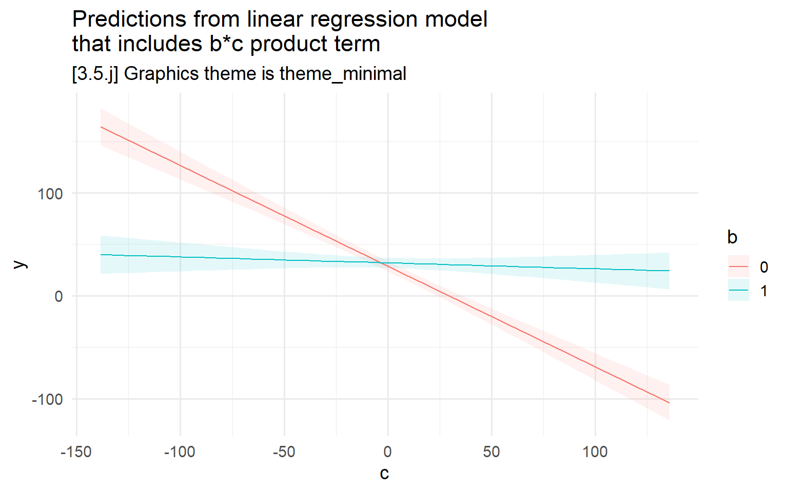
Colors
3.5.l - 3.5.o color examples
#3.5.l - ggplot's default palette (hue)
ggplot(filter(hrs, !is.na(dzcount), !is.na(race4cat)),
aes(x = race4cat, y = dzcount, fill = race4cat)) +
stat_summary(fun = mean, geom = "bar", width = 0.65) +
stat_summary(fun.data = mean_cl_normal, geom = "errorbar", width = 0.2) +
labs(x = "Race-ethnicity",
y = "Mean number of chronic diseases",
title = "[3.5.k] Average chronic disease count by race-ethnicity",
subtitle = "Colors are ggplot default hue") +
theme(legend.position = "none")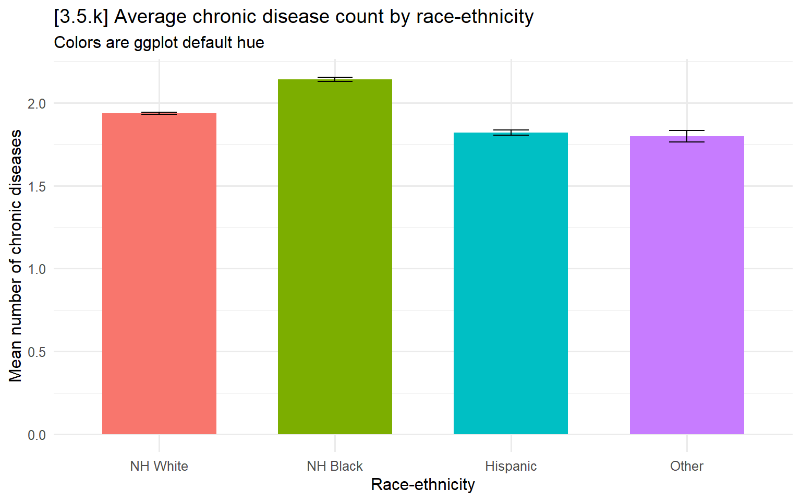
# 3.5.l - Okabe-Ito nominal palette
ggplot(filter(hrs, !is.na(dzcount), !is.na(race4cat)),
aes(x = race4cat, y = dzcount, fill = race4cat)) +
stat_summary(fun = mean, geom = "bar", width = 0.65) +
stat_summary(fun.data = mean_cl_normal, geom = "errorbar", width = 0.2) +
labs(x = "Race-ethnicity",
y = "Mean number of chronic diseases",
title = "[3.5.l] Average chronic disease count by race-ethnicity",
subtitle = "Colors are from Okabe-Ito package") +
theme(legend.position = "none") +
scale_fill_okabe_ito()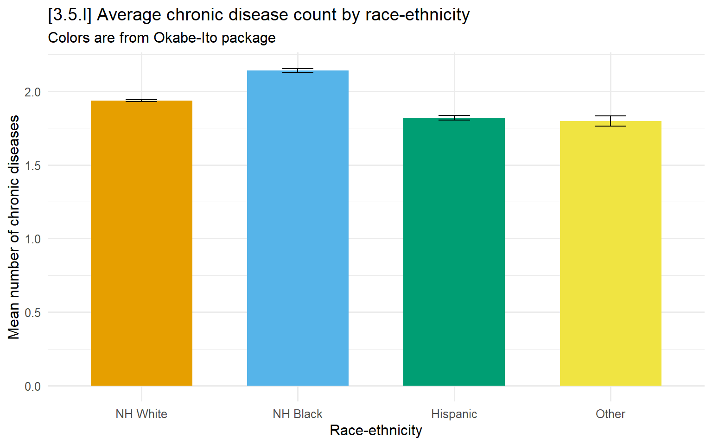
# 3.5.m - Mize's cleanplots palette (manually specified colors)
ggplot(filter(hrs, !is.na(dzcount), !is.na(race4cat)),
aes(x = race4cat, y = dzcount, fill = race4cat)) +
stat_summary(fun = mean, geom = "bar", width = 0.65) +
stat_summary(fun.data = mean_cl_normal, geom = "errorbar", width = 0.2) +
labs(x = "Race-ethnicity",
y = "Mean number of chronic diseases",
title = "[3.5.m] Average chronic disease count by race-ethnicity",
subtitle = "Colors are from Mize's cleanplots scheme") +
theme(legend.position = "none") +
scale_fill_manual(values=c("#C80000", "#82C0DF", "#808080", "#000000"))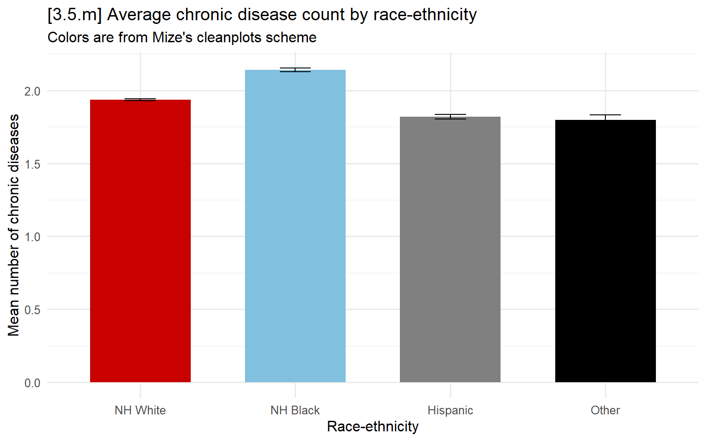
# Can save the cleanplots colors and then use it just by name for any figure
cleanplots <- c("#D50000", "#82C0DF", "#808080", "#000000",
"#00D5D5", "#800080", "#FFD200", "#006000",
"#938DD2", "#1A476F")
ggplot(filter(hrs, !is.na(dzcount), !is.na(race4cat)),
aes(x = race4cat, y = dzcount, fill = race4cat)) +
stat_summary(fun = mean, geom = "bar", width = 0.65) +
stat_summary(fun.data = mean_cl_normal, geom = "errorbar", width = 0.2) +
labs(x = "Race-ethnicity",
y = "Mean number of chronic diseases",
title = "Average chronic disease count by race-ethnicity",
subtitle = "Colors are from Mize's cleanplots scheme") +
theme(legend.position = "none") +
scale_fill_manual(values=cleanplots)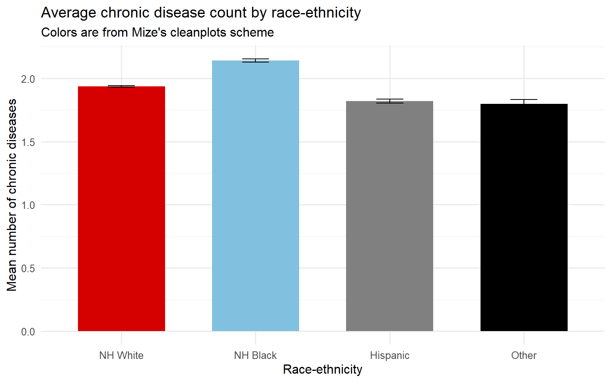
# 3.5.n - custom colors
ggplot(filter(hrs, !is.na(dzcount), !is.na(race4cat)),
aes(x = race4cat, y = dzcount, fill = race4cat)) +
stat_summary(fun = mean, geom = "bar", width = 0.65) +
stat_summary(fun.data = mean_cl_normal, geom = "errorbar", width = 0.2) +
labs(x = "Race-ethnicity",
y = "Mean number of chronic diseases",
title = "[3.5.n] Average chronic disease count by race-ethnicity",
subtitle = "Colors are custom, set by named colors in R") +
theme(legend.position = "none") +
scale_fill_manual(values=c("burlywood3", "black", "gray50", "goldenrod"))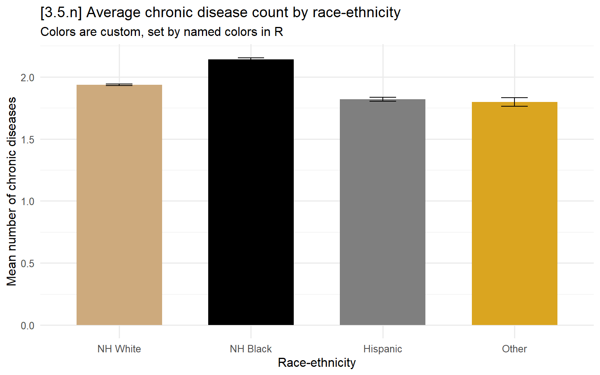
# 3.5.o - viridis ordinal palette
ggplot(filter(hrs, !is.na(dzcount), !is.na(degree), degree != "other"),
aes(x = degree, y = dzcount, fill = degree)) +
stat_summary(fun = mean, geom = "bar", width = 0.65) +
stat_summary(fun.data = mean_cl_normal, geom = "errorbar", width = 0.2) +
labs(x = "Educational degree",
y = "Mean number of chronic diseases",
title = "[3.5.o] Average chronic disease count by educational attainment",
subtitle = "Colors are from viridis package") +
theme(legend.position = "none") +
scale_fill_viridis(discrete = TRUE)3.6 - Presenting model results
# Ex regression table
model1 <- lm(cog ~ drinksweek, data = hrs)
model2 <- lm(cog ~ drinksweek + age + woman + race4cat, data = hrs)
model3 <- lm(cog ~ drinksweek + age + woman + race4cat + degree, data = hrs)
model4 <- lm(cog ~ drinksweek + age + woman + race4cat + degree + year, data = hrs)
modelsummary(list(model1, model2, model3, model4), stars = TRUE)| (1) | (2) | (3) | (4) | |
|---|---|---|---|---|
| (Intercept) | 15.065*** | 25.972*** | 21.427*** | 47.303*** |
| (0.010) | (0.058) | (0.060) | (2.278) | |
| drinksweek | 0.045*** | 0.017*** | 0.008*** | 0.009*** |
| (0.002) | (0.001) | (0.001) | (0.001) | |
| age | -0.154*** | -0.131*** | -0.130*** | |
| (0.001) | (0.001) | (0.001) | ||
| womanwoman | 0.597*** | 0.741*** | 0.741*** | |
| (0.018) | (0.017) | (0.017) | ||
| race4catNH Black | -3.203*** | -2.509*** | -2.471*** | |
| (0.024) | (0.023) | (0.023) | ||
| race4catHispanic | -3.075*** | -1.619*** | -1.560*** | |
| (0.028) | (0.027) | (0.028) | ||
| race4catOther | -1.846*** | -1.768*** | -1.720*** | |
| (0.052) | (0.048) | (0.048) | ||
| degreeged | 1.867*** | 1.907*** | ||
| (0.041) | (0.041) | |||
| degreehs | 2.564*** | 2.592*** | ||
| (0.024) | (0.024) | |||
| degreehs/ged | 3.466*** | 3.507*** | ||
| (0.027) | (0.027) | |||
| degreeaa/lt ba | 3.526*** | 3.588*** | ||
| (0.040) | (0.041) | |||
| degreebach | 4.477*** | 4.530*** | ||
| (0.030) | (0.030) | |||
| degreemaster/mba | 4.964*** | 5.016*** | ||
| (0.037) | (0.037) | |||
| degreelaw/md/phd | 5.610*** | 5.635*** | ||
| (0.064) | (0.064) | |||
| degreeother | 5.150*** | 5.216*** | ||
| (0.684) | (0.684) | |||
| year | -0.013*** | |||
| (0.001) | ||||
| Num.Obs. | 229242 | 229009 | 229009 | 229009 |
| R2 | 0.004 | 0.195 | 0.303 | 0.303 |
| R2 Adj. | 0.004 | 0.195 | 0.303 | 0.303 |
| AIC | 1352410.2 | 1302227.5 | 1269315.2 | 1269188.1 |
| BIC | 1352441.2 | 1302310.2 | 1269480.6 | 1269363.9 |
| Log.Lik. | -676202.086 | -651105.748 | -634641.579 | -634577.032 |
| RMSE | 4.62 | 4.15 | 3.87 | 3.87 |
| + p < 0.1, * p < 0.05, ** p < 0.01, *** p < 0.001 |
Coefficient plots
# 3.6.a - nested models
modelplot(list("Drinks only" = model1, "+ demographics" = model2,
"+ educ. degree" = model3, "+ year FEs" = model4),
coef_omit = "Intercept|year") +
labs(title = "[3.6.a] Coefficients from models predicting cognitive test performance") +
scale_y_discrete(limits = rev) +
geom_vline(xintercept = 0, linetype = "dashed", color = "gray20") +
scale_color_manual(values = cleanplots) +
theme(plot.title.position = "plot") # 3.6.b - Fit separate models for men and women
mod_women <- lm(cog ~ drinksweek + age + race4cat + degree,
data = subset(hrs, woman == "woman"))
mod_men <- lm(cog ~ drinksweek + age + race4cat + degree,
data = subset(hrs, woman == "man"))
modelplot( list("Women" = mod_women, "Men" = mod_men),
coef_omit = "Intercept|year") +
labs(title = "[3.6.b] Coefficients from models predicting cognitive test performance",
subtitle = "Separate models by gender") +
scale_y_discrete(limits = rev) +
geom_vline(xintercept = 0, linetype = "dashed", color = "gray20") +
scale_color_manual(values=cleanplots) +
theme(plot.title.position = "plot") 3.7 - Model predictions
# Create data with no missing age observations so I can include age polynomials
hrs_clean <- hrs %>%
filter(!is.na(age))Plots for continuous IVs
# Interaction effect model, with nonlinear age effect
int_mod <- lm(cesd ~ poly(age, 3, raw = TRUE) * marstatB + as.factor(year),
data = hrs_clean)
summary(int_mod)##
## Call:
## lm(formula = cesd ~ poly(age, 3, raw = TRUE) * marstatB + as.factor(year),
## data = hrs_clean)
##
## Residuals:
## Min 1Q Median 3Q Max
## -2.9402 -1.2388 -0.8494 0.8015 7.0026
##
## Coefficients:
## Estimate Std. Error
## (Intercept) 1.950e+00 6.261e-01
## poly(age, 3, raw = TRUE)1 6.760e-02 2.804e-02
## poly(age, 3, raw = TRUE)2 -1.771e-03 4.140e-04
## poly(age, 3, raw = TRUE)3 1.127e-05 2.011e-06
## marstatBcurrently married -1.814e+00 8.588e-01
## as.factor(year)1996 -1.012e-01 2.117e-02
## as.factor(year)1998 1.468e-01 2.028e-02
## as.factor(year)2000 1.100e-01 2.080e-02
## as.factor(year)2002 7.299e-02 2.127e-02
## as.factor(year)2004 1.386e-02 2.056e-02
## as.factor(year)2006 5.743e-02 2.090e-02
## as.factor(year)2008 -2.888e-02 2.130e-02
## as.factor(year)2010 -4.438e-03 1.998e-02
## as.factor(year)2012 1.589e-02 2.028e-02
## as.factor(year)2014 -6.359e-03 2.077e-02
## as.factor(year)2016 -3.208e-02 2.016e-02
## as.factor(year)2018 -5.106e-02 2.115e-02
## as.factor(year)2020 4.916e-03 2.171e-02
## poly(age, 3, raw = TRUE)1:marstatBcurrently married 4.117e-02 3.949e-02
## poly(age, 3, raw = TRUE)2:marstatBcurrently married -7.197e-04 5.993e-04
## poly(age, 3, raw = TRUE)3:marstatBcurrently married 4.923e-06 2.996e-06
## t value Pr(>|t|)
## (Intercept) 3.115 0.001842 **
## poly(age, 3, raw = TRUE)1 2.410 0.015936 *
## poly(age, 3, raw = TRUE)2 -4.278 1.88e-05 ***
## poly(age, 3, raw = TRUE)3 5.603 2.11e-08 ***
## marstatBcurrently married -2.112 0.034692 *
## as.factor(year)1996 -4.780 1.75e-06 ***
## as.factor(year)1998 7.238 4.55e-13 ***
## as.factor(year)2000 5.289 1.23e-07 ***
## as.factor(year)2002 3.431 0.000602 ***
## as.factor(year)2004 0.674 0.500441
## as.factor(year)2006 2.747 0.006006 **
## as.factor(year)2008 -1.356 0.175163
## as.factor(year)2010 -0.222 0.824208
## as.factor(year)2012 0.783 0.433548
## as.factor(year)2014 -0.306 0.759482
## as.factor(year)2016 -1.591 0.111528
## as.factor(year)2018 -2.414 0.015796 *
## as.factor(year)2020 0.226 0.820885
## poly(age, 3, raw = TRUE)1:marstatBcurrently married 1.043 0.297129
## poly(age, 3, raw = TRUE)2:marstatBcurrently married -1.201 0.229800
## poly(age, 3, raw = TRUE)3:marstatBcurrently married 1.643 0.100388
## ---
## Signif. codes: 0 '***' 0.001 '**' 0.01 '*' 0.05 '.' 0.1 ' ' 1
##
## Residual standard error: 1.958 on 247831 degrees of freedom
## (32489 observations deleted due to missingness)
## Multiple R-squared: 0.03949, Adjusted R-squared: 0.03941
## F-statistic: 509.4 on 20 and 247831 DF, p-value: < 2.2e-16# 3.7.a - Make a plot of predictions for age
fig37a <- plot_predictions(int_mod, condition = "age")
fig37afig37a + scale_x_continuous(breaks = seq(30, 90, 10), limits = c(30, 90)) +
scale_y_continuous(breaks = seq(0, 3, .5), limits = c(0, 3)) +
labs(title = "[3.7.a] Predicted depressive symptoms across ages",
y = "Depressive symptoms")# 3.7.b - Include separate age prediction lines by marital status
fig37b <- plot_predictions(int_mod, condition = c("age", "marstatB"))
fig37bfig37b + scale_x_continuous(breaks = seq(30, 90, 10), limits = c(30, 90)) +
scale_y_continuous(breaks = seq(0, 3, .5), limits = c(0, 3)) +
labs(title = "[3.7.b] Predicted depressive symptoms across ages",
subtitle = "By marital status",
y = "Depressive symptoms") +
scale_color_manual(values=cleanplots,
name = "Marital status", labels = c("Not married", "Married")) +
guides(fill = "none")Plots for nominal IVs
table(ah$relaffil)##
## None Protestant Catholic Christian Other
## 4117 10367 5076 3630 1905# Model for effect of religious affiliation
nom_mod <- lm(cesd ~ age + relaffil * male + wave,
data = ah, subset = wave %in% c("Wave4", "Wave5") & relaffil != "NA")
summary(nom_mod)##
## Call:
## lm(formula = cesd ~ age + relaffil * male + wave, data = ah,
## subset = wave %in% c("Wave4", "Wave5") & relaffil != "NA")
##
## Residuals:
## Min 1Q Median 3Q Max
## -0.6744 -0.4150 -0.1621 0.2380 2.5838
##
## Coefficients:
## Estimate Std. Error t value Pr(>|t|)
## (Intercept) 0.5908926 0.0857222 6.893 5.82e-12 ***
## age 0.0008735 0.0029713 0.294 0.768777
## relaffilProtestant -0.1025815 0.0224312 -4.573 4.87e-06 ***
## relaffilCatholic -0.0827950 0.0260846 -3.174 0.001508 **
## relaffilChristian -0.0653478 0.0239228 -2.732 0.006315 **
## relaffilOther 0.0564080 0.0309739 1.821 0.068617 .
## maleMale -0.0841899 0.0251236 -3.351 0.000808 ***
## waveWave5 -0.0628490 0.0276293 -2.275 0.022946 *
## relaffilProtestant:maleMale 0.0259889 0.0321648 0.808 0.419116
## relaffilCatholic:maleMale 0.0237490 0.0370759 0.641 0.521830
## relaffilChristian:maleMale 0.0444132 0.0347266 1.279 0.200951
## relaffilOther:maleMale -0.0351715 0.0454418 -0.774 0.438956
## ---
## Signif. codes: 0 '***' 0.001 '**' 0.01 '*' 0.05 '.' 0.1 ' ' 1
##
## Residual standard error: 0.5357 on 9169 degrees of freedom
## (129 observations deleted due to missingness)
## Multiple R-squared: 0.01184, Adjusted R-squared: 0.01066
## F-statistic: 9.99 on 11 and 9169 DF, p-value: < 2.2e-16# 3.7.c - The default plot for a nominal IV is a dot plot (which is good)
fig37c <- plot_predictions(nom_mod, condition = "relaffil")
fig37cfig37c + scale_y_continuous(breaks = seq(.4, .8, .1), limits = c(.4, .8)) +
labs(title = "[3.7.c] Predicted depressive symptoms by religious affiliation",
y = "Depressive symptoms",
x = "Religious affiliation")# 3.7.d - Break out predictions by additional grouping variable
fig37d <- plot_predictions(nom_mod, condition = c("relaffil", "male"))
fig37dfig37d + scale_y_continuous(breaks = seq(.4, .8, .1), limits = c(.4, .8)) +
labs(title = "[3.7.c] Predicted depressive symptoms by religious affiliation and gender",
y = "Depressive symptoms",
x = "Religious affiliation") +
scale_color_manual(values=cleanplots)# DON'T DO THIS! Just an example of what not to do (connect lines for nominal IV)
ggplot(filter(ah, !is.na(relaffil)),
aes(x = factor(relaffil), y = cesd, group = 1)) +
stat_summary(fun = mean, geom = "point", size = 3) +
stat_summary(fun = mean, geom = "line", linetype = "dashed", color = "gray60") +
labs(x = "Religious affiliation",
y = "Mean depressive symptoms",
title = "DON'T DO THIS: Bad example with connected lines for nominal IV") 3.8 - Model Diagnostics
#Fit a model to use, predicting depressive symptoms
dep_mod <- lm(cesd ~ age + male + race + college + hhincome,
data = ah, subset = wave == "Wave5")
summary(dep_mod)##
## Call:
## lm(formula = cesd ~ age + male + race + college + hhincome, data = ah,
## subset = wave == "Wave5")
##
## Residuals:
## Min 1Q Median 3Q Max
## -0.6528 -0.3326 -0.1255 0.1968 2.7628
##
## Coefficients:
## Estimate Std. Error t value Pr(>|t|)
## (Intercept) 7.446e-01 1.565e-01 4.759 2.03e-06 ***
## age -2.632e-03 4.243e-03 -0.620 0.535115
## maleMale -6.085e-02 1.712e-02 -3.554 0.000385 ***
## raceBlack 1.166e-03 2.197e-02 0.053 0.957683
## raceLatinx -2.628e-04 3.128e-02 -0.008 0.993297
## raceAsian -6.222e-04 5.049e-02 -0.012 0.990169
## raceOther -5.502e-02 6.963e-02 -0.790 0.429445
## collegeWith college degree -7.273e-02 1.893e-02 -3.843 0.000124 ***
## hhincome -1.406e-06 1.437e-07 -9.787 < 2e-16 ***
## ---
## Signif. codes: 0 '***' 0.001 '**' 0.01 '*' 0.05 '.' 0.1 ' ' 1
##
## Residual standard error: 0.486 on 3414 degrees of freedom
## (773 observations deleted due to missingness)
## Multiple R-squared: 0.05541, Adjusted R-squared: 0.0532
## F-statistic: 25.03 on 8 and 3414 DF, p-value: < 2.2e-16# Calculate internal model fit stats (residuals, leverage, influence, etc)
diagnostics <- data.frame(
fitted = fitted(dep_mod),
residuals = residuals(dep_mod),
std_resid = rstandard(dep_mod), # Standardized residuals
studres = rstudent(dep_mod), # Studentized residuals
cooks_d = cooks.distance(dep_mod), # Cook's D (influence)
leverage = hatvalues(dep_mod), # Hat values (leverage)
dffits = dffits(dep_mod), # DFFITS (influence)
dfbetas = dfbetas(dep_mod) # DFBETAS (influence on each coef)
)
head(diagnostics)## fitted residuals std_resid studres cooks_d leverage
## 7 0.6114945 0.5885055 1.2123363 1.2124197 3.632604e-04 0.002219471
## 29 0.5309972 -0.3309972 -0.6817256 -0.6816721 9.407143e-05 0.001818405
## 33 0.2386497 -0.2386497 -0.4924743 -0.4924197 1.533914e-04 0.005659931
## 38 0.4943970 -0.2943970 -0.6065185 -0.6064623 9.809752e-05 0.002394260
## 47 0.5684099 -0.3684099 -0.7590889 -0.7590418 1.686648e-04 0.002627477
## 52 0.5725079 -0.5725079 -1.1796490 -1.1797167 4.144456e-04 0.002673264
## dffits dfbetas..Intercept. dfbetas.age dfbetas.maleMale
## 7 0.05718211 -0.019015272 0.021269237 -0.016312503
## 29 -0.02909485 -0.018929984 0.017740521 -0.014409976
## 33 -0.03715126 -0.005224720 0.007390365 -0.008008115
## 38 -0.02971051 0.009135687 -0.008832918 -0.012458338
## 47 -0.03895888 -0.020984130 0.020399225 0.009049881
## 52 -0.06107731 -0.052388506 0.049030037 0.016006381
## dfbetas.raceBlack dfbetas.raceLatinx dfbetas.raceAsian dfbetas.raceOther
## 7 0.036101293 -2.953109e-03 0.0003999317 -0.0016064361
## 29 0.006346352 5.017107e-03 0.0017258918 0.0025467189
## 33 -0.023045933 -1.104735e-03 -0.0004211243 -0.0008474157
## 38 -0.020772937 9.937340e-04 0.0002022053 0.0006973973
## 47 -0.026415634 -3.103885e-05 -0.0016665172 -0.0001726292
## 52 0.011064550 7.741833e-03 0.0013047755 0.0033032941
## dfbetas.collegeWith.college.degree dfbetas.hhincome
## 7 -0.011652667 -0.0086967441
## 29 0.005930204 0.0071917490
## 33 0.017637257 -0.0285713907
## 38 0.006121787 -0.0005193083
## 47 0.013352211 -0.0055296555
## 52 0.019715657 0.0006087306examine distribution of standardized residuals
ggplot(diagnostics, aes(x = std_resid)) +
geom_histogram(aes(y = after_stat(density)), color = "red4", fill = NA, bins = 30) +
stat_function(fun = dnorm, args = list(mean = 0, sd = 1),
color = "black", linetype = "dashed") +
labs(title = "[3.8.a] Histogram of Standardized Residuals",
subtitle = "Dashed line shows normal distribution",
x = "Standardized Residual",
y = "Density")examine distribution of influence (Cook’s distance)
ggplot(diagnostics, aes(x = cooks_d)) +
geom_histogram(color = "blue", fill = NA, bins = 30) +
labs(title = "[3.8.b] Histogram of Cook's Distance Influence Statistics",
x = "Cook's Distance (Influence)",
y = "Count")plot residuals sized by influence
# Create ID index
diagnostics$id <- 1:nrow(diagnostics)
# Scatterplot with Cook's D as size
ggplot(diagnostics, aes(x = id, y = residuals, size = cooks_d)) +
geom_point(alpha = 0.6) +
labs(title = "[3.8.c] Residuals by Observation ID",
subtitle = "Point size reflects Cook's Distance (influence)",
x = "Observation ID",
y = "Residuals",
size = "Cook's D") +
geom_hline(yintercept = 0, linetype = "dashed", color = "gray50")# Flag high influence observations
diagnostics$high_influence <- diagnostics$cooks_d > 4/nrow(diagnostics)
diagnostics$id <- 1:nrow(diagnostics)
# Color the high influence obs in red
ggplot(diagnostics, aes(x = id, y = residuals, size = cooks_d, color = high_influence)) +
geom_point(alpha = 0.6) +
geom_text(data = diagnostics[diagnostics$high_influence, ],
aes(label = id), size = 3, vjust = -1, show.legend = FALSE) +
scale_color_manual(values = c("black", "red"),
labels = c("Normal", "High Influence")) +
labs(title = "[3.8.d] Residuals by Observation ID",
subtitle = "Point size reflects Cook's Distance (influence)",
x = "Observation ID",
y = "Residuals",
size = "Cook's D",
color = "Influence") +
geom_hline(yintercept = 0, linetype = "dashed", color = "gray50")